Lectures · Bài giảng › L06
Optimisation, L'Hôpital's rule, Newton's method and antiderivativesTối ưu hóa, quy tắc L'Hôpital, phương pháp Newton và nguyên hàm
Four independent tools in one lecture. Optimisation (slides 2–10) is a word-problem method: draw, name, build one function, apply the closed interval method. L'Hôpital's rule (12–23) evaluates indeterminate limits, with the seven types and the conversion tricks. Newton's method (25–33) is an iterative root finder. Antiderivatives (35–43) start Chapter 4 and give the formula for motion with constant acceleration.
Time plan: optimisation and L'Hôpital need the most practice; Newton's method and antiderivatives are mostly recipes. Do the exercises on each.
Bốn công cụ độc lập trong một bài. Tối ưu hóa (slide 2–10) là phương pháp cho bài toán có lời văn: vẽ hình, đặt biến, lập một hàm, áp dụng phương pháp đoạn đóng. Quy tắc L'Hôpital (12–23) tính các giới hạn vô định, với bảy dạng và các mẹo biến đổi. Phương pháp Newton (25–33) là cách lặp để tìm nghiệm. Nguyên hàm (35–43) mở đầu Chương 4 và cho công thức chuyển động với gia tốc không đổi.
Phân bổ thời gian: tối ưu hóa và L'Hôpital cần luyện nhiều nhất; Newton và nguyên hàm chủ yếu là công thức. Làm bài tập ở mỗi phần.
Textbook · Giáo trình: Thomas ch. 4 (4.5, 4.7, 4.8, 4.9) · Stewart ch. 4 (4.7, 4.4, 4.8, 4.9)
Slide list · Danh sách slide (44)
Roadmap: optimisation · Lộ trình: tối ưu hóa
★ Context · Bổ trợWhat an optimisation problem asks · Bài toán tối ưu hỏi gì
★★ Important · Quan trọng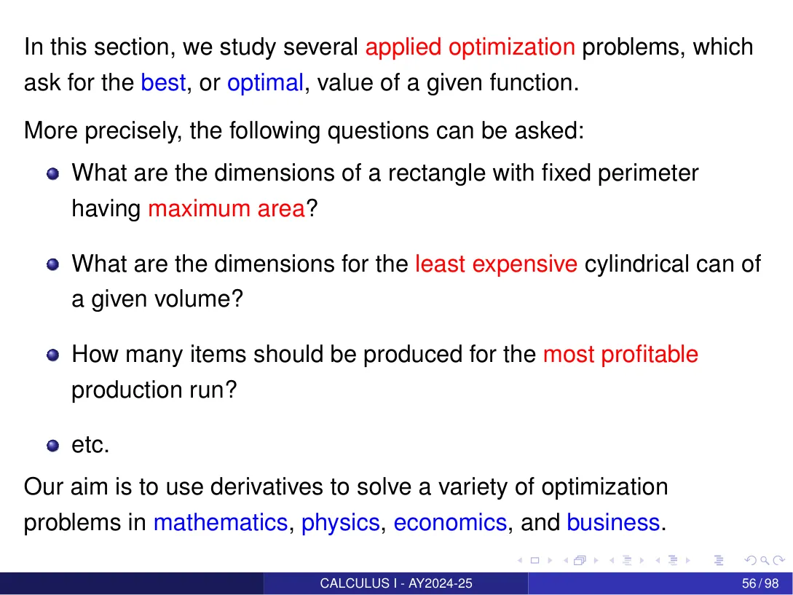
We look for the best value of a quantity: the rectangle of given perimeter with the largest area, the cheapest can of a given volume, the most profitable production run. The tool is the derivative, in mathematics, physics, economics and business.
Ta tìm giá trị tốt nhất của một đại lượng: hình chữ nhật chu vi cho trước có diện tích lớn nhất, cái lon rẻ nhất có thể tích cho trước, mức sản xuất có lợi nhuận cao nhất. Công cụ là đạo hàm, trong toán, vật lý, kinh tế và kinh doanh.
Steps 1–3: understand, draw, name the variables · Bước 1–3: hiểu đề, vẽ hình, đặt biến
★★★ Core · Cốt lõi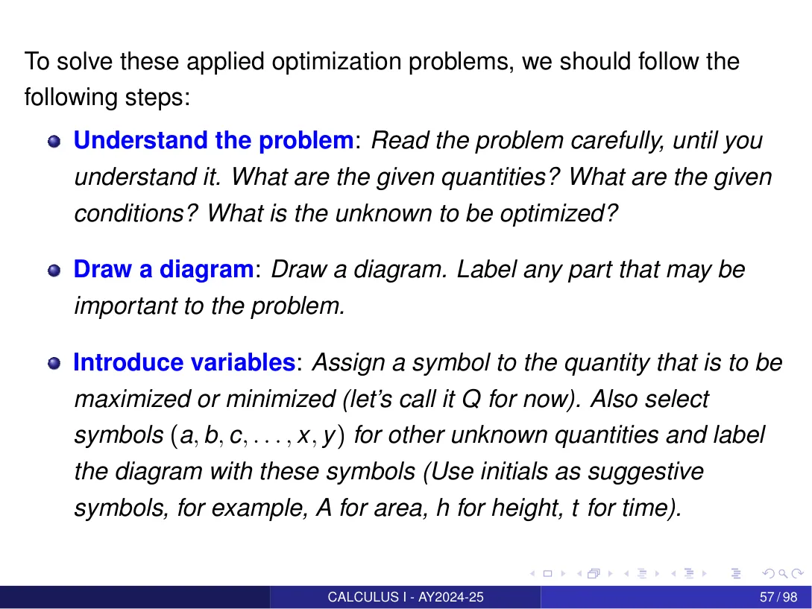
Understand the problem: what is given, what is the condition, what is to be optimised? Draw a diagram and label it. Introduce variables: a symbol $Q$ for the quantity to optimise and suggestive symbols (initials: $A$ area, $h$ height, $t$ time) for the others. Insist the student does these three before any algebra.
Hiểu đề: cho gì, điều kiện gì, cần tối ưu đại lượng nào? Vẽ hình và ghi nhãn. Đặt biến: ký hiệu $Q$ cho đại lượng cần tối ưu và các ký hiệu gợi nhớ (chữ cái đầu: $A$ diện tích, $h$ chiều cao, $t$ thời gian) cho các đại lượng khác. Yêu cầu bạn làm đủ ba việc này trước khi biến đổi đại số.
Steps 4–6: one variable, its domain, the extreme · Bước 4–6: một biến, tập xác định, cực trị
★★★ Core · Cốt lõi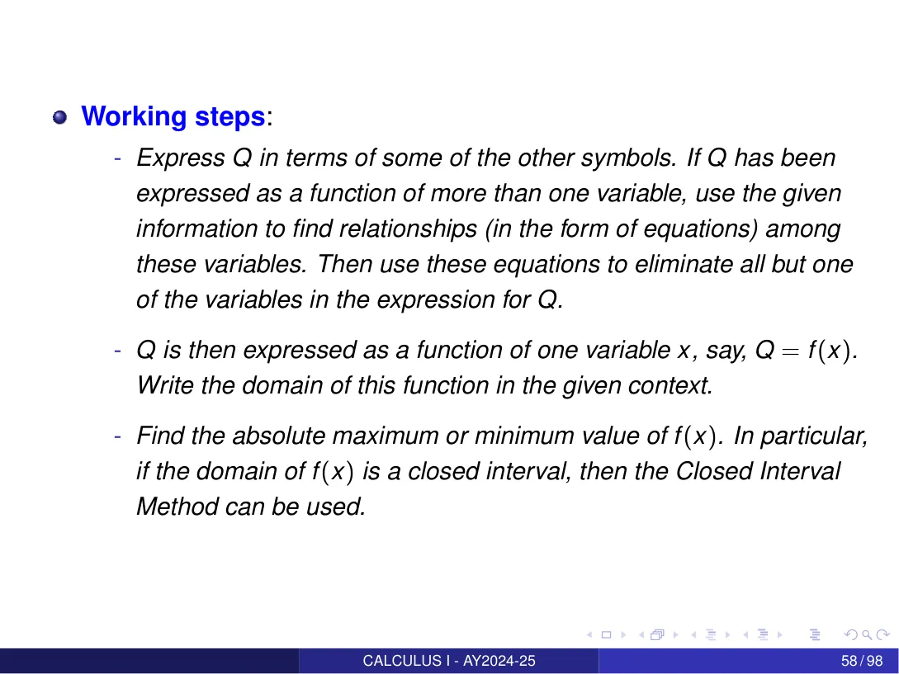
Express $Q$ with the other symbols; if it has several variables, use the given constraints to eliminate all but one, so that $Q=f(x)$. Write the domain in the context of the problem. Then find the absolute max or min; on a closed interval use the closed interval method.
Biểu diễn $Q$ qua các ký hiệu khác; nếu có nhiều biến, dùng các ràng buộc đã cho để khử hết trừ một biến, được $Q=f(x)$. Viết tập xác định theo ngữ cảnh bài toán. Sau đó tìm giá trị lớn nhất hoặc nhỏ nhất tuyệt đối; trên đoạn đóng dùng phương pháp đoạn đóng.
Applied optimisation is a guaranteed test question; the marks come from the setup (function and domain), not from the calculus.
Tối ưu ứng dụng chắc chắn có trong đề; điểm đến từ khâu thiết lập (hàm và tập xác định), không phải từ phần giải tích.
Among rectangles with perimeter $100$, which has the largest area?
Trong các hình chữ nhật có chu vi $100$, hình nào có diện tích lớn nhất?
Answer and solution · Đáp án và lời giải
Answer · Đáp án: the square $25\times25$, area $625$
Let the sides be $x$ and $50-x$ (half the perimeter), $A(x)=x(50-x)$ on $[0,50]$. $A'(x)=50-2x=0$ gives $x=25$; $A(25)=625$ and $A(0)=A(50)=0$.
Gọi hai cạnh là $x$ và $50-x$ (nửa chu vi), $A(x)=x(50-x)$ trên $[0,50]$. $A'(x)=50-2x=0$ cho $x=25$; $A(25)=625$ và $A(0)=A(50)=0$.
Example: the farmer's field, the setting · Ví dụ: thửa ruộng của bác nông dân, bối cảnh
★★★ Core · Cốt lõi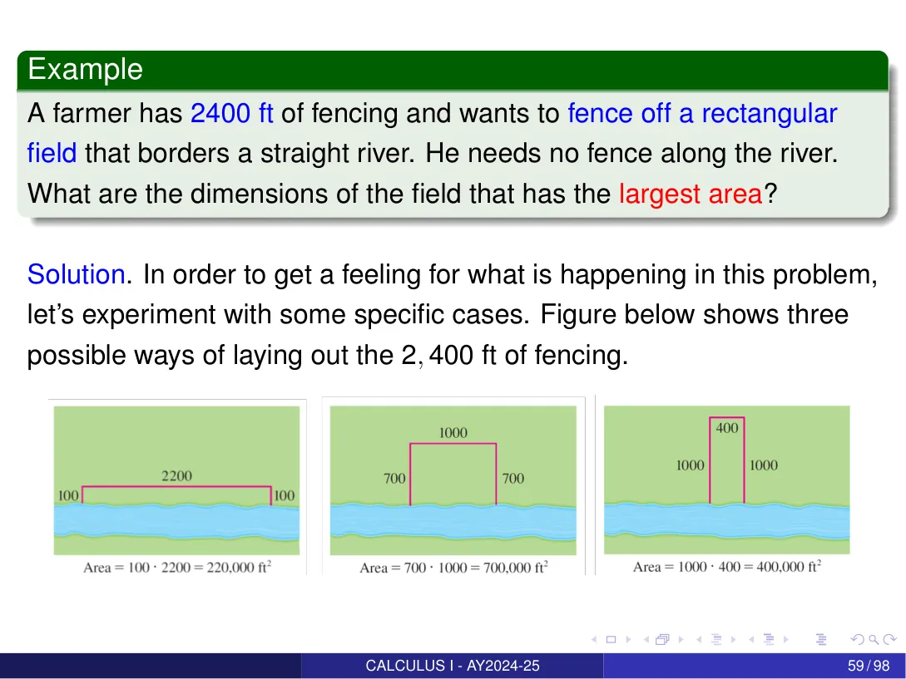
A farmer has $2400$ ft of fence for a rectangular field next to a straight river; no fence is needed along the river. Which dimensions give the largest area? First experiment with three layouts to see that the answer is a compromise between a long thin and a short wide field.
Một nông dân có $2400$ ft hàng rào để rào một thửa ruộng hình chữ nhật cạnh một con sông thẳng; không cần rào dọc bờ sông. Kích thước nào cho diện tích lớn nhất? Trước hết thử ba cách bố trí để thấy đáp án là sự dung hòa giữa ruộng dài hẹp và ruộng ngắn rộng.
The farmer: area as a function of one variable · Bác nông dân: diện tích như hàm một biến
★★★ Core · Cốt lõi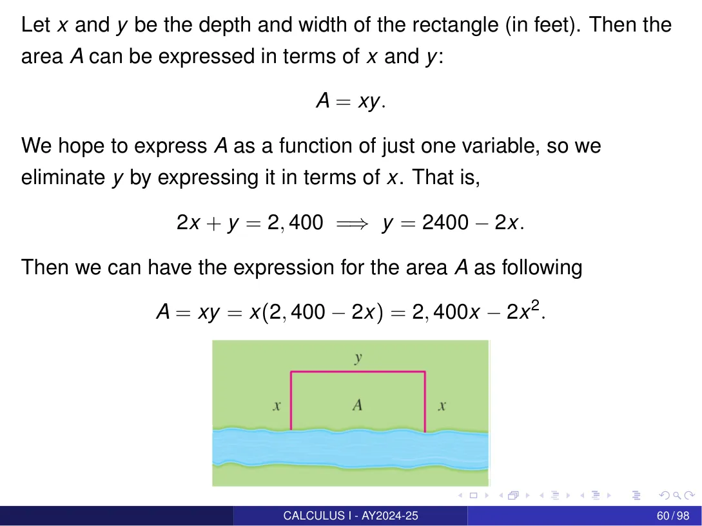
Let $x$ be the depth and $y$ the width. Area $A=xy$. The fence covers two depths and one width: $2x+y=2400$, so $y=2400-2x$. Then $A(x)=x(2400-2x)=2400x-2x^2$.
Gọi $x$ là chiều sâu và $y$ là chiều rộng. Diện tích $A=xy$. Hàng rào gồm hai chiều sâu và một chiều rộng: $2x+y=2400$, nên $y=2400-2x$. Khi đó $A(x)=x(2400-2x)=2400x-2x^2$.
The farmer: domain, critical point and answer · Bác nông dân: tập xác định, điểm tới hạn và đáp số
★★★ Core · Cốt lõi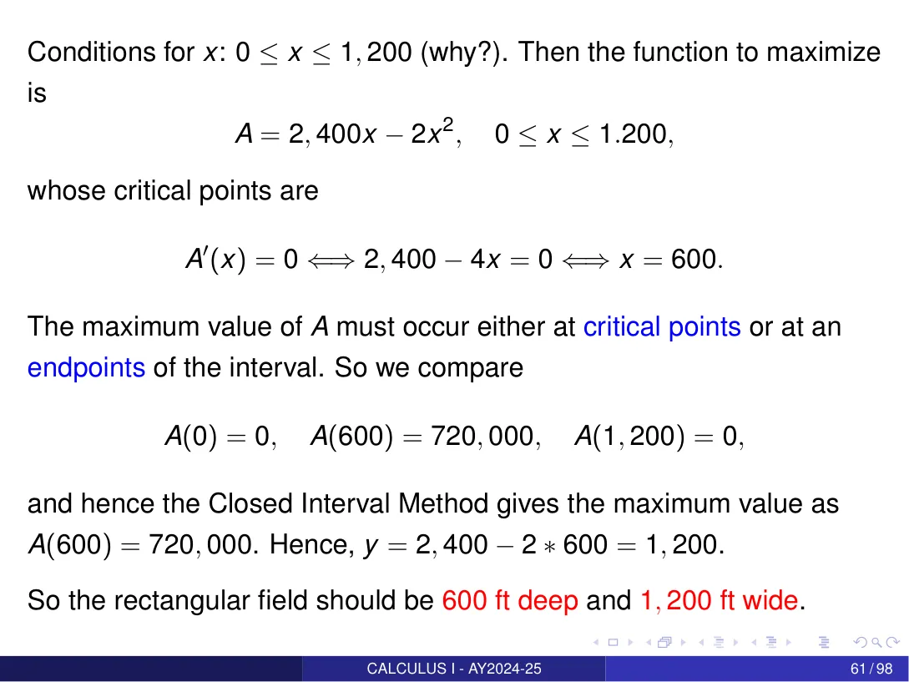
Domain: $0\le x\le1200$ (why? $x\ge0$ and $y=2400-2x\ge0$). $A'(x)=2400-4x=0$ at $x=600$. Compare $A(0)=0$, $A(600)=720\,000$, $A(1200)=0$. The maximum is $A(600)=720\,000$ ft$^2$ with $y=1200$: the field is 600 ft deep and 1200 ft wide.
Tập xác định: $0\le x\le1200$ (vì sao? $x\ge0$ và $y=2400-2x\ge0$). $A'(x)=2400-4x=0$ tại $x=600$. So sánh $A(0)=0$, $A(600)=720\,000$, $A(1200)=0$. Giá trị lớn nhất là $A(600)=720\,000$ ft$^2$ với $y=1200$: thửa ruộng sâu 600 ft và rộng 1200 ft.
A farmer has $1000$ ft of fence and a field along a river (no fence on the river side). Find the dimensions of maximum area.
Một nông dân có $1000$ ft hàng rào và thửa ruộng dọc sông (không rào phía sông). Tìm kích thước cho diện tích lớn nhất.
Answer and solution · Đáp án và lời giải
Answer · Đáp án: $250$ ft deep, $500$ ft wide, area $125\,000$ ft$^2$
$y=1000-2x$, $A(x)=x(1000-2x)$ on $[0,500]$; $A'(x)=1000-4x=0$ gives $x=250$, $y=500$, $A=125\,000$.
$y=1000-2x$, $A(x)=x(1000-2x)$ trên $[0,500]$; $A'(x)=1000-4x=0$ cho $x=250$, $y=500$, $A=125\,000$.
Example: the closest point on a parabola, setup · Ví dụ: điểm gần nhất trên parabol, thiết lập
★★★ Core · Cốt lõi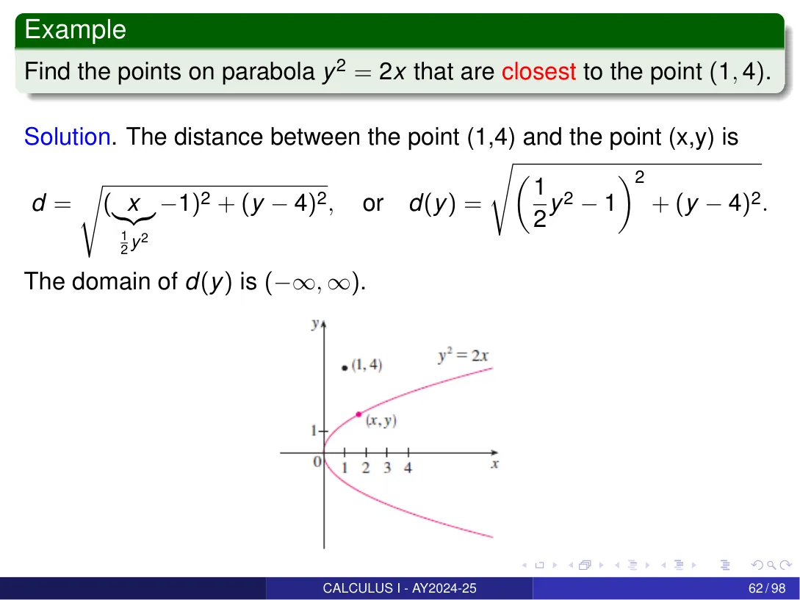
Find the points of the parabola $y^2=2x$ closest to $(1,4)$. A point on the parabola is $\left(\frac{y^2}2,y\right)$, so the distance is $d(y)=\sqrt{\left(\frac{y^2}2-1\right)^2+(y-4)^2}$, defined for all $y$. We eliminated $x$ using the constraint $x=\frac{y^2}2$.
Tìm các điểm của parabol $y^2=2x$ gần $(1,4)$ nhất. Một điểm trên parabol là $\left(\frac{y^2}2,y\right)$, nên khoảng cách là $d(y)=\sqrt{\left(\frac{y^2}2-1\right)^2+(y-4)^2}$, xác định với mọi $y$. Ta đã khử $x$ nhờ ràng buộc $x=\frac{y^2}2$.
Minimise the square of the distance · Cực tiểu hóa bình phương khoảng cách
★★★ Core · Cốt lõi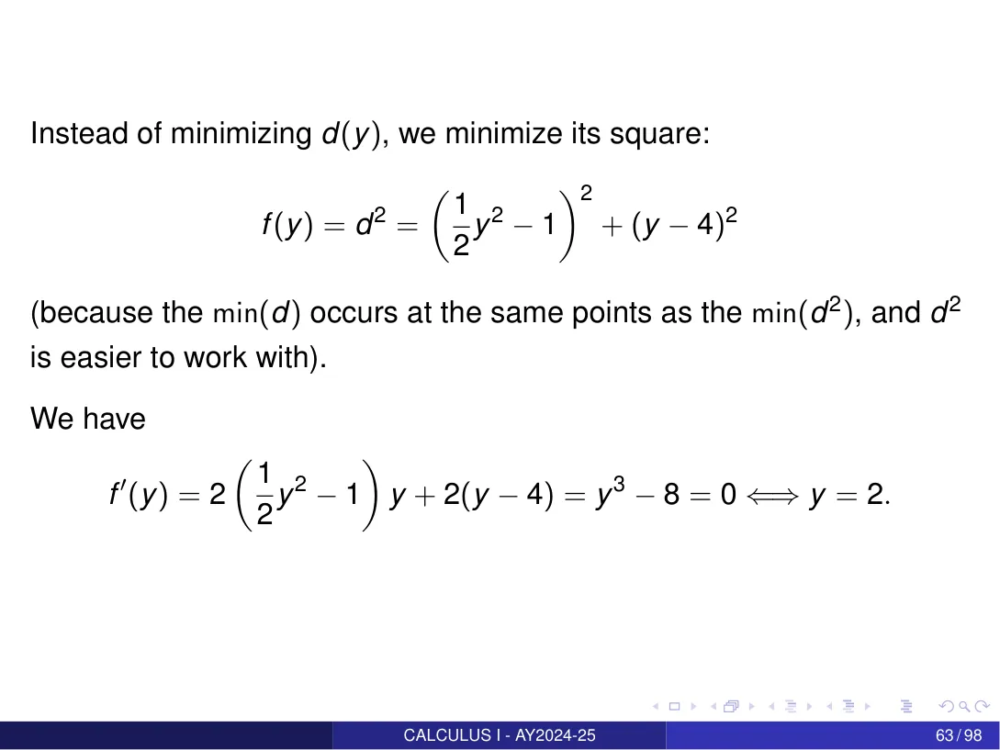
Instead of $d$ minimise $f(y)=d^2$: the minimum of $d$ occurs at the same place as the minimum of $d^2$ and the algebra is easier (no square root). $f'(y)=2\left(\frac{y^2}2-1\right)y+2(y-4)=y^3-8=0\iff y=2$.
Thay vì $d$ hãy cực tiểu hóa $f(y)=d^2$: cực tiểu của $d$ xảy ra cùng chỗ với cực tiểu của $d^2$ và biến đổi dễ hơn (không có căn). $f'(y)=2\left(\frac{y^2}2-1\right)y+2(y-4)=y^3-8=0\iff y=2$.
Squaring a distance (or any positive quantity) before optimising is a standard simplification; remember it for every "closest point" problem.
Bình phương khoảng cách (hay bất kỳ đại lượng dương nào) trước khi tối ưu là một cách đơn giản hóa chuẩn; nhớ nó cho mọi bài "điểm gần nhất".
Check $f'(y)$: differentiate $f(y)=\left(\frac{y^2}2-1\right)^2+(y-4)^2$.
Kiểm tra $f'(y)$: đạo hàm $f(y)=\left(\frac{y^2}2-1\right)^2+(y-4)^2$.
Answer and solution · Đáp án và lời giải
Answer · Đáp án: $f'(y)=y^3-8$
$2\left(\frac{y^2}2-1\right)\cdot y+2(y-4)=y^3-2y+2y-8=y^3-8$.
$2\left(\frac{y^2}2-1\right)\cdot y+2(y-4)=y^3-2y+2y-8=y^3-8$.
The answer: the point $(2,2)$ · Đáp số: điểm $(2,2)$
★★★ Core · Cốt lõi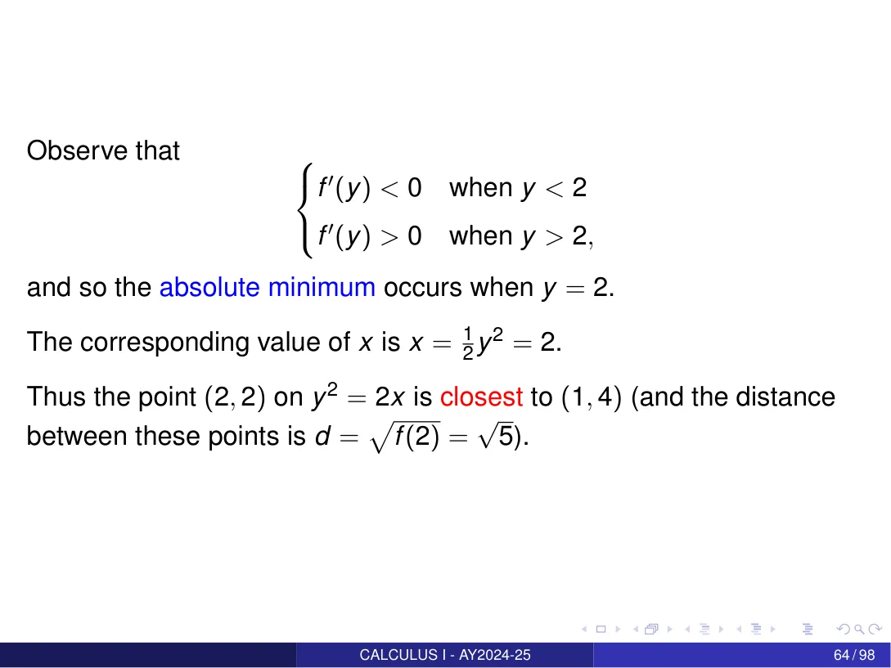
$f'<0$ for $y<2$ and $f'>0$ for $y>2$, so the absolute minimum is at $y=2$, with $x=\frac{y^2}2=2$. The closest point is $(2,2)$ and the distance is $\sqrt{f(2)}=\sqrt5$. This is the First Derivative Test on a domain that is not a closed interval.
$f'<0$ khi $y<2$ và $f'>0$ khi $y>2$, nên cực tiểu tuyệt đối tại $y=2$, với $x=\frac{y^2}2=2$. Điểm gần nhất là $(2,2)$ và khoảng cách là $\sqrt{f(2)}=\sqrt5$. Đây là phép thử đạo hàm bậc một trên một tập xác định không phải đoạn đóng.
Find the point of $y=x^2$ closest to $(0,3)$ and the minimum squared distance.
Tìm điểm của $y=x^2$ gần $(0,3)$ nhất và bình phương khoảng cách nhỏ nhất.
Answer and solution · Đáp án và lời giải
Answer · Đáp án: $x=\pm\sqrt{5/2}$, $d^2=\dfrac{11}4$
$d^2=x^2+(x^2-3)^2=x^4-5x^2+9$. $\frac d{dx}=4x^3-10x=0$: $x=0$ (a local max, $d^2=9$) or $x^2=\frac52$ with $d^2=\frac{25}4-\frac{25}2+9=\frac{11}4$.
$d^2=x^2+(x^2-3)^2=x^4-5x^2+9$. $\frac d{dx}=4x^3-10x=0$: $x=0$ (cực đại địa phương, $d^2=9$) hoặc $x^2=\frac52$ với $d^2=\frac{25}4-\frac{25}2+9=\frac{11}4$.
Roadmap: L'Hôpital's rule · Lộ trình: quy tắc L'Hôpital
★ Context · Bổ trợIndeterminate forms of type $0/0$ · Dạng vô định $0/0$
★★★ Core · Cốt lõi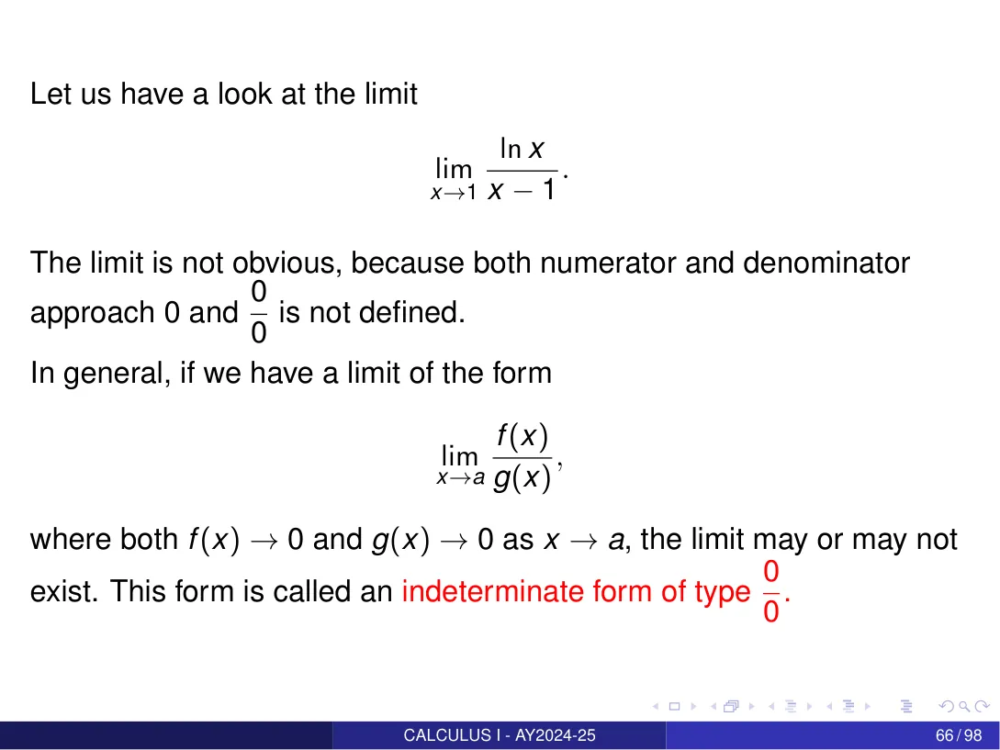
$\lim_{x\to1}\frac{\ln x}{x-1}$ is not obvious: numerator and denominator both tend to $0$, and $\frac00$ is undefined. In general $\frac{f}{g}$ with $f\to0$ and $g\to0$ is an indeterminate form of type $\frac00$: the limit may or may not exist; the form itself says nothing.
$\lim_{x\to1}\frac{\ln x}{x-1}$ không hiển nhiên: tử và mẫu cùng tiến tới $0$, và $\frac00$ không xác định. Tổng quát, $\frac{f}{g}$ với $f\to0$ và $g\to0$ là dạng vô định $\frac00$: giới hạn có thể tồn tại hoặc không; bản thân dạng này không cho biết gì.
The old tools do not work here · Các công cụ cũ không dùng được ở đây
★★ Important · Quan trọng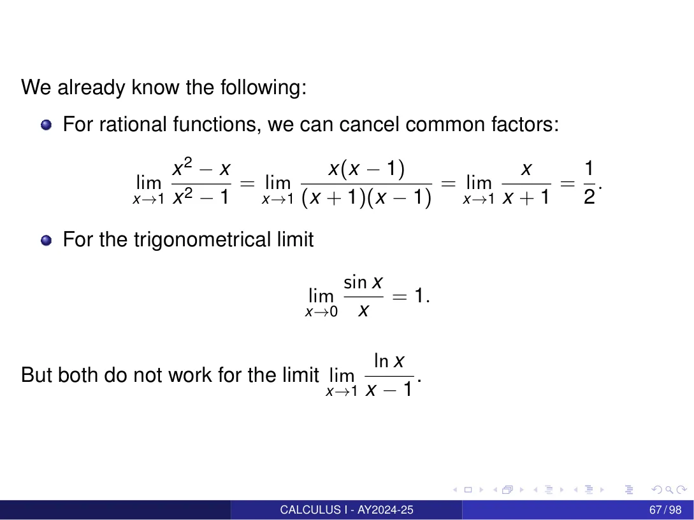
We can cancel common factors in rational functions: $\lim_{x\to1}\frac{x^2-x}{x^2-1}=\lim\frac x{x+1}=\frac12$; and we know $\frac{\sin x}x\to1$. Neither idea works for $\frac{\ln x}{x-1}$.
Với hàm hữu tỉ ta rút gọn thừa số chung: $\lim_{x\to1}\frac{x^2-x}{x^2-1}=\lim\frac x{x+1}=\frac12$; và ta biết $\frac{\sin x}x\to1$. Cả hai cách đều không dùng được cho $\frac{\ln x}{x-1}$.
Indeterminate forms of type $\infty/\infty$ · Dạng vô định $\infty/\infty$
★★ Important · Quan trọng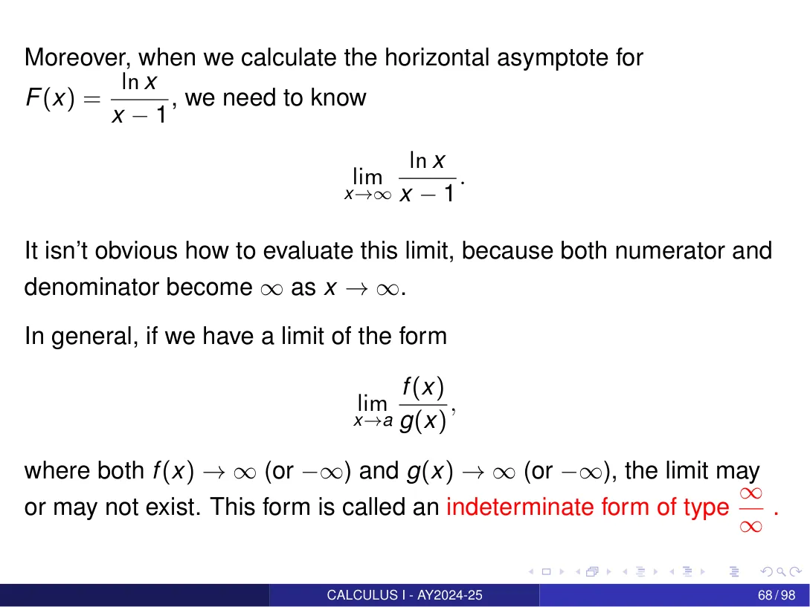
Likewise, finding the horizontal asymptote of $\frac{\ln x}{x-1}$ needs $\lim_{x\to\infty}\frac{\ln x}{x-1}$, where both parts tend to $\infty$. Such a limit is an indeterminate form of type $\frac\infty\infty$.
Tương tự, tìm tiệm cận ngang của $\frac{\ln x}{x-1}$ cần $\lim_{x\to\infty}\frac{\ln x}{x-1}$, trong đó cả hai phần cùng tiến tới $\infty$. Giới hạn như vậy là dạng vô định $\frac\infty\infty$.
L'Hôpital's Rule · Quy tắc L'Hôpital
★★★ Core · Cốt lõi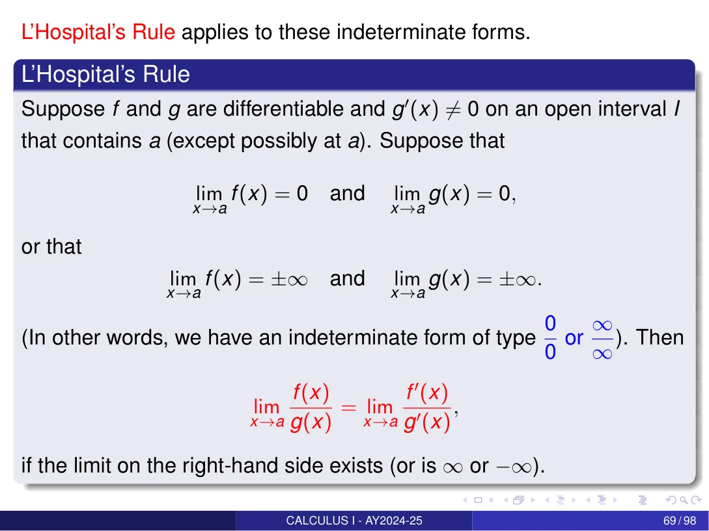
Suppose $f,g$ are differentiable with $g'\ne0$ near $a$, and the limit is of type $\frac00$ or $\frac{\pm\infty}{\pm\infty}$. Then $\lim\frac{f(x)}{g(x)}=\lim\frac{f'(x)}{g'(x)}$ if the right-hand limit exists (or is $\pm\infty$). Differentiate numerator and denominator separately, not as a quotient.
Giả sử $f,g$ khả vi với $g'\ne0$ gần $a$, và giới hạn có dạng $\frac00$ hoặc $\frac{\pm\infty}{\pm\infty}$. Khi đó $\lim\frac{f(x)}{g(x)}=\lim\frac{f'(x)}{g'(x)}$ nếu giới hạn bên phải tồn tại (hoặc là $\pm\infty$). Đạo hàm tử và mẫu riêng biệt, không dùng quy tắc thương.
L'Hôpital turns many hard limits into one line, and it is the quickest tool in the exam; but applying it without checking the form is a classic way to lose marks.
L'Hôpital biến nhiều giới hạn khó thành một dòng, và là công cụ nhanh nhất trong kỳ thi; nhưng áp dụng mà không kiểm tra dạng là cách mất điểm kinh điển.
Compute $\displaystyle\lim_{x\to0}\frac{e^x-1-x}{x^2}$.
Tính $\displaystyle\lim_{x\to0}\frac{e^x-1-x}{x^2}$.
Answer and solution · Đáp án và lời giải
Answer · Đáp án: $\dfrac12$
Type $\frac00$. L'Hôpital: $\frac{e^x-1}{2x}$, still $\frac00$; again: $\frac{e^x}{2}\to\frac12$.
Dạng $\frac00$. L'Hôpital: $\frac{e^x-1}{2x}$, vẫn $\frac00$; lần nữa: $\frac{e^x}{2}\to\frac12$.
Compute $\displaystyle\lim_{x\to\infty}\frac{x^2}{e^x}$.
Tính $\displaystyle\lim_{x\to\infty}\frac{x^2}{e^x}$.
Answer and solution · Đáp án và lời giải
Answer · Đáp án: $0$
Type $\frac\infty\infty$: $\frac{2x}{e^x}$, still $\frac\infty\infty$; again $\frac2{e^x}\to0$. The exponential beats any power.
Dạng $\frac\infty\infty$: $\frac{2x}{e^x}$, vẫn $\frac\infty\infty$; lần nữa $\frac2{e^x}\to0$. Hàm mũ thắng mọi lũy thừa.
Notes: check the form, and one-sided limits · Lưu ý: kiểm tra dạng, và giới hạn một phía
★★★ Core · Cốt lõi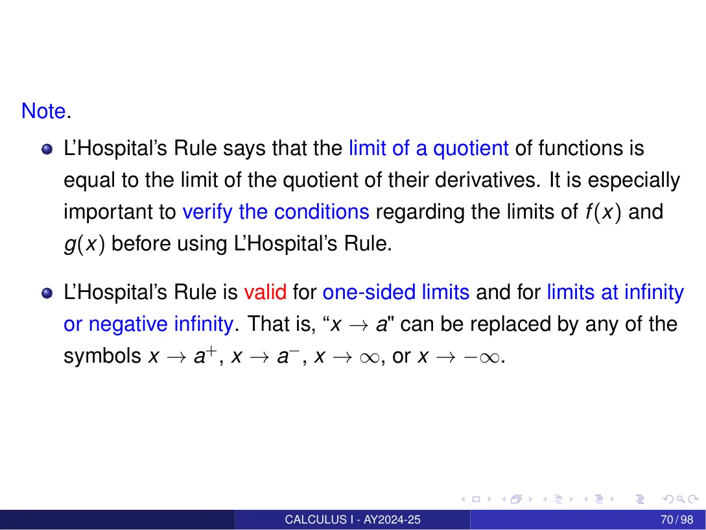
First verify the hypotheses: both limits $0$ or both infinite. L'Hôpital also works for $x\to a^+$, $a^-$, $\infty$, $-\infty$. Warning example: $\lim_{x\to0}\frac{x+1}{x+2}=\frac12$ by substitution, but blindly differentiating gives $\frac11=1$, which is wrong.
Trước hết kiểm tra giả thiết: cả hai giới hạn bằng $0$ hoặc cả hai vô cực. L'Hôpital cũng dùng cho $x\to a^+$, $a^-$, $\infty$, $-\infty$. Ví dụ cảnh báo: $\lim_{x\to0}\frac{x+1}{x+2}=\frac12$ bằng cách thế, nhưng lấy đạo hàm mù quáng cho $\frac11=1$, sai.
What goes wrong if you apply L'Hôpital to $\displaystyle\lim_{x\to0}\frac{x+1}{x+2}$?
Điều gì sai nếu áp dụng L'Hôpital cho $\displaystyle\lim_{x\to0}\frac{x+1}{x+2}$?
Answer and solution · Đáp án và lời giải
Answer · Đáp án: not an indeterminate form: true limit $\frac12$, L'Hôpital would give $1$
The numerator tends to $1$ and the denominator to $2$, so this is not $\frac00$ or $\frac\infty\infty$; direct substitution gives $\frac12$, whereas $\frac{(x+1)'}{(x+2)'}=1$.
Tử tiến tới $1$ và mẫu tới $2$ nên đây không phải $\frac00$ hay $\frac\infty\infty$; thế trực tiếp cho $\frac12$, còn $\frac{(x+1)'}{(x+2)'}=1$.
Example: $\lim_{x\to1}\frac{\ln x}{x-1}$ · Ví dụ: $\lim_{x\to1}\frac{\ln x}{x-1}$
★★★ Core · Cốt lõi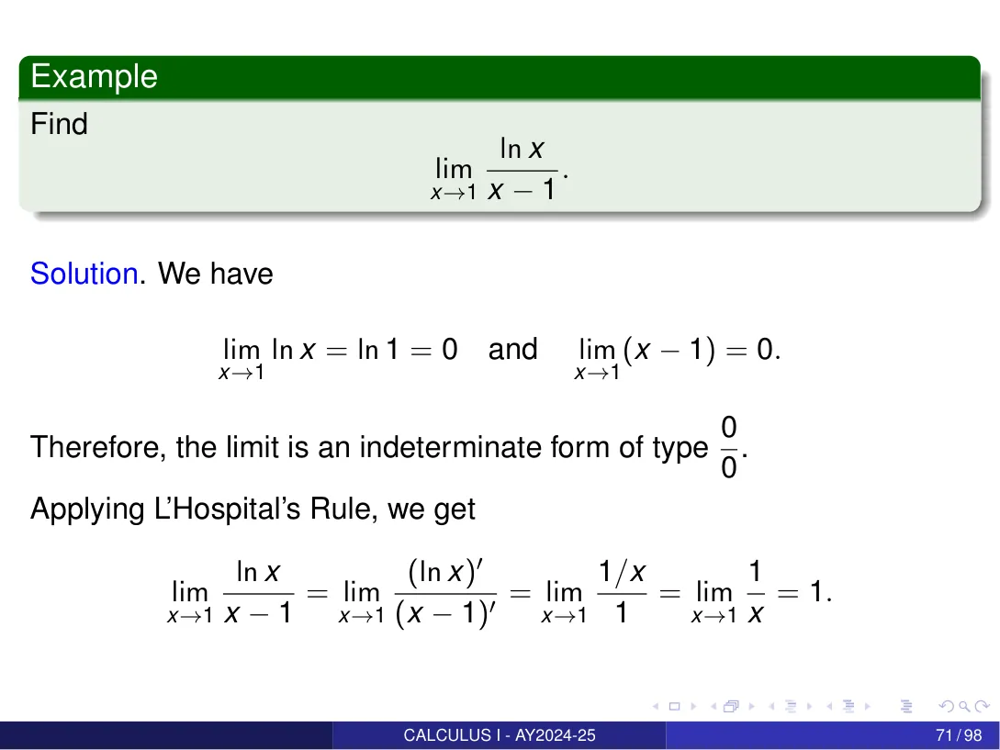
Check the form: $\ln x\to0$ and $x-1\to0$, so type $\frac00$. L'Hôpital: $\frac{(\ln x)'}{(x-1)'}=\frac{1/x}{1}=\frac1x\to1$. (This limit is just the derivative of $\ln$ at $1$.)
Kiểm tra dạng: $\ln x\to0$ và $x-1\to0$ nên dạng $\frac00$. L'Hôpital: $\frac{(\ln x)'}{(x-1)'}=\frac{1/x}{1}=\frac1x\to1$. (Giới hạn này chính là đạo hàm của $\ln$ tại $1$.)
Compute $\displaystyle\lim_{x\to1}\frac{\ln x}{x-1}$ and $\displaystyle\lim_{x\to0}\frac{\sin x}{x}$ with L'Hôpital.
Tính $\displaystyle\lim_{x\to1}\frac{\ln x}{x-1}$ và $\displaystyle\lim_{x\to0}\frac{\sin x}{x}$ bằng L'Hôpital.
Answer and solution · Đáp án và lời giải
Answer · Đáp án: $1$ and $1$
Both are $\frac00$: $\frac{1/x}{1}\to1$ and $\frac{\cos x}1\to1$. (Careful: using L'Hôpital for $\frac{\sin x}x$ is circular if the limit was used to find $(\sin x)'$.)
Cả hai là $\frac00$: $\frac{1/x}{1}\to1$ và $\frac{\cos x}1\to1$. (Cẩn thận: dùng L'Hôpital cho $\frac{\sin x}x$ là lập luận vòng tròn nếu giới hạn này đã dùng để tìm $(\sin x)'$.)
Indeterminate products $0\cdot\infty$ · Dạng vô định tích $0\cdot\infty$
★★★ Core · Cốt lõi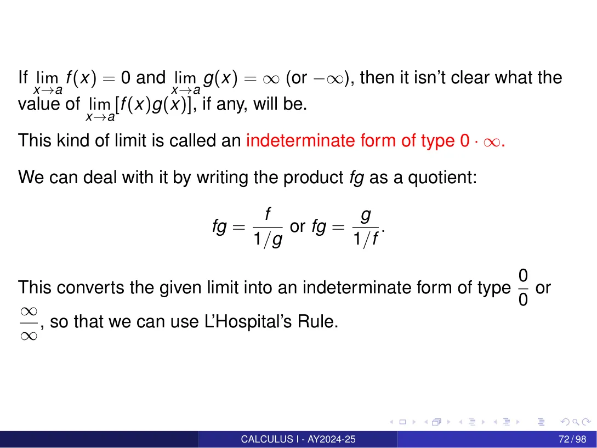
If $f\to0$ and $g\to\pm\infty$, the product $fg$ is of type $0\cdot\infty$. Write it as a quotient, $\frac f{1/g}$ or $\frac g{1/f}$, to get $\frac00$ or $\frac\infty\infty$ and then use L'Hôpital.
Nếu $f\to0$ và $g\to\pm\infty$ thì tích $fg$ có dạng $0\cdot\infty$. Viết nó thành thương, $\frac f{1/g}$ hoặc $\frac g{1/f}$, để được $\frac00$ hoặc $\frac\infty\infty$ rồi dùng L'Hôpital.
Example: $\lim_{x\to0^+}x\ln x$ · Ví dụ: $\lim_{x\to0^+}x\ln x$
★★★ Core · Cốt lõi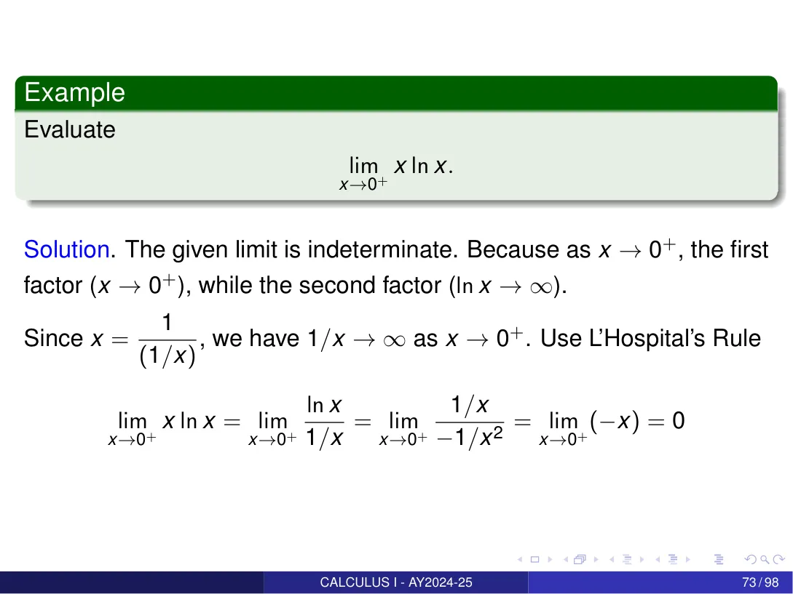
Type $0\cdot(-\infty)$. Write $x\ln x=\frac{\ln x}{1/x}$, type $\frac\infty\infty$. L'Hôpital: $\frac{1/x}{-1/x^2}=-x\to0$. So $\lim_{x\to0^+}x\ln x=0$: the power beats the logarithm.
Dạng $0\cdot(-\infty)$. Viết $x\ln x=\frac{\ln x}{1/x}$, dạng $\frac\infty\infty$. L'Hôpital: $\frac{1/x}{-1/x^2}=-x\to0$. Vậy $\lim_{x\to0^+}x\ln x=0$: lũy thừa thắng logarit.
Compute $\displaystyle\lim_{x\to\infty}xe^{-x}$ and $\displaystyle\lim_{x\to0^+}x^2\ln x$.
Tính $\displaystyle\lim_{x\to\infty}xe^{-x}$ và $\displaystyle\lim_{x\to0^+}x^2\ln x$.
Answer and solution · Đáp án và lời giải
Answer · Đáp án: $0$ and $0$
$xe^{-x}=\frac{x}{e^x}\to\frac1{e^x}\to0$. And $x^2\ln x=\frac{\ln x}{x^{-2}}\to\frac{1/x}{-2x^{-3}}=-\frac{x^2}2\to0$.
$xe^{-x}=\frac{x}{e^x}\to\frac1{e^x}\to0$. Và $x^2\ln x=\frac{\ln x}{x^{-2}}\to\frac{1/x}{-2x^{-3}}=-\frac{x^2}2\to0$.
Choosing the better quotient, and the type $\infty-\infty$ · Chọn thương thuận lợi hơn, và dạng $\infty-\infty$
★★★ Core · Cốt lõi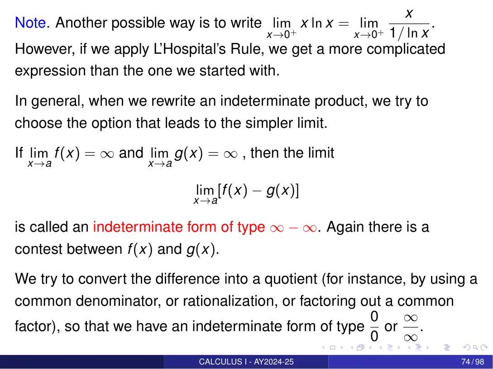
For $x\ln x$ the other quotient $\frac x{1/\ln x}$ gives a more complicated limit: choose the rewriting that simplifies. For $\infty-\infty$ (a contest between $f$ and $g$) convert the difference into a quotient: common denominator, rationalise, or factor.
Với $x\ln x$ thương còn lại $\frac x{1/\ln x}$ cho giới hạn phức tạp hơn: hãy chọn cách viết đơn giản hơn. Với $\infty-\infty$ (cuộc đua giữa $f$ và $g$) hãy biến hiệu thành thương: quy đồng, nhân liên hợp hoặc đặt thừa số chung.
Example: $\lim_{x\to(\pi/2)^-}(\sec x-\tan x)$ · Ví dụ: $\lim_{x\to(\pi/2)^-}(\sec x-\tan x)$
★★★ Core · Cốt lõi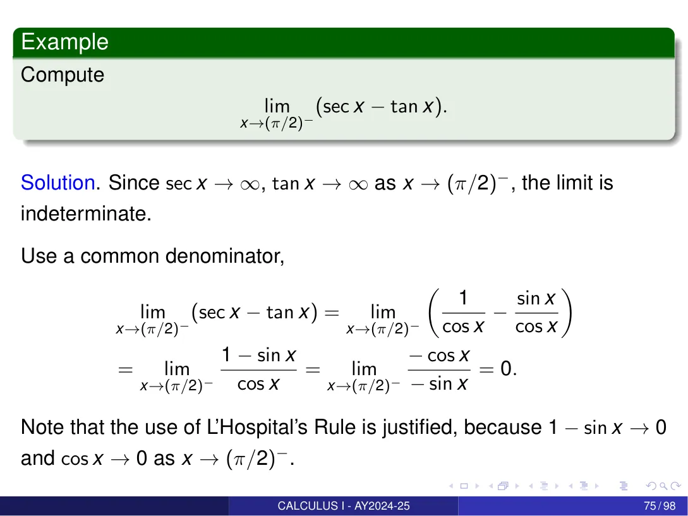
Both $\sec x$ and $\tan x$ tend to $\infty$, so type $\infty-\infty$. Common denominator: $\frac1{\cos x}-\frac{\sin x}{\cos x}=\frac{1-\sin x}{\cos x}$, now $\frac00$. L'Hôpital: $\frac{-\cos x}{-\sin x}\to\frac01=0$. The rule is justified because $1-\sin x\to0$ and $\cos x\to0$.
Cả $\sec x$ và $\tan x$ tiến tới $\infty$ nên dạng $\infty-\infty$. Quy đồng: $\frac1{\cos x}-\frac{\sin x}{\cos x}=\frac{1-\sin x}{\cos x}$, nay là $\frac00$. L'Hôpital: $\frac{-\cos x}{-\sin x}\to\frac01=0$. Quy tắc dùng được vì $1-\sin x\to0$ và $\cos x\to0$.
Compute $\displaystyle\lim_{x\to0}\left(\frac1x-\frac1{\sin x}\right)$.
Tính $\displaystyle\lim_{x\to0}\left(\frac1x-\frac1{\sin x}\right)$.
Answer and solution · Đáp án và lời giải
Answer · Đáp án: $0$
Common denominator: $\frac{\sin x-x}{x\sin x}$, type $\frac00$. L'Hôpital: $\frac{\cos x-1}{\sin x+x\cos x}$, still $\frac00$; again: $\frac{-\sin x}{2\cos x-x\sin x}\to\frac0{2}=0$.
Quy đồng: $\frac{\sin x-x}{x\sin x}$, dạng $\frac00$. L'Hôpital: $\frac{\cos x-1}{\sin x+x\cos x}$, vẫn $\frac00$; lần nữa: $\frac{-\sin x}{2\cos x-x\sin x}\to\frac0{2}=0$.
Exponent forms: $0^0$, $\infty^0$, $1^\infty$ · Các dạng số mũ: $0^0$, $\infty^0$, $1^\infty$
★★★ Core · Cốt lõi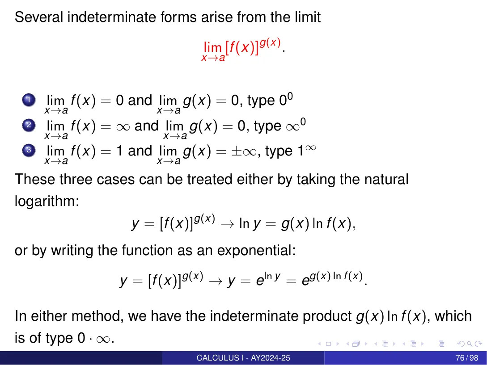
For $\lim[f(x)]^{g(x)}$ three forms are indeterminate: $0^0$, $\infty^0$, $1^\infty$. Take the logarithm: $y=f^g\Rightarrow\ln y=g\ln f$, a $0\cdot\infty$ product; find $\lim\ln y=L$, then $\lim y=e^L$. Equivalent: write $f^g=e^{g\ln f}$.
Với $\lim[f(x)]^{g(x)}$ có ba dạng vô định: $0^0$, $\infty^0$, $1^\infty$. Lấy logarit: $y=f^g\Rightarrow\ln y=g\ln f$, một tích dạng $0\cdot\infty$; tìm $\lim\ln y=L$, rồi $\lim y=e^L$. Tương đương: viết $f^g=e^{g\ln f}$.
Compute $\displaystyle\lim_{x\to0^+}x^x$ and $\displaystyle\lim_{x\to\infty}\left(1+\frac1x\right)^x$.
Tính $\displaystyle\lim_{x\to0^+}x^x$ và $\displaystyle\lim_{x\to\infty}\left(1+\frac1x\right)^x$.
Answer and solution · Đáp án và lời giải
Answer · Đáp án: $1$ and $e$
$\ln(x^x)=x\ln x\to0$, so $x^x\to e^0=1$. For the second, $\ln y=x\ln(1+\frac1x)=\frac{\ln(1+1/x)}{1/x}\to1$ by L'Hôpital, so $y\to e$.
$\ln(x^x)=x\ln x\to0$ nên $x^x\to e^0=1$. Với giới hạn thứ hai, $\ln y=x\ln(1+\frac1x)=\frac{\ln(1+1/x)}{1/x}\to1$ theo L'Hôpital, nên $y\to e$.
Example: $\lim_{x\to0^+}(1+\sin4x)^{\cot x}$ · Ví dụ: $\lim_{x\to0^+}(1+\sin4x)^{\cot x}$
★★★ Core · Cốt lõi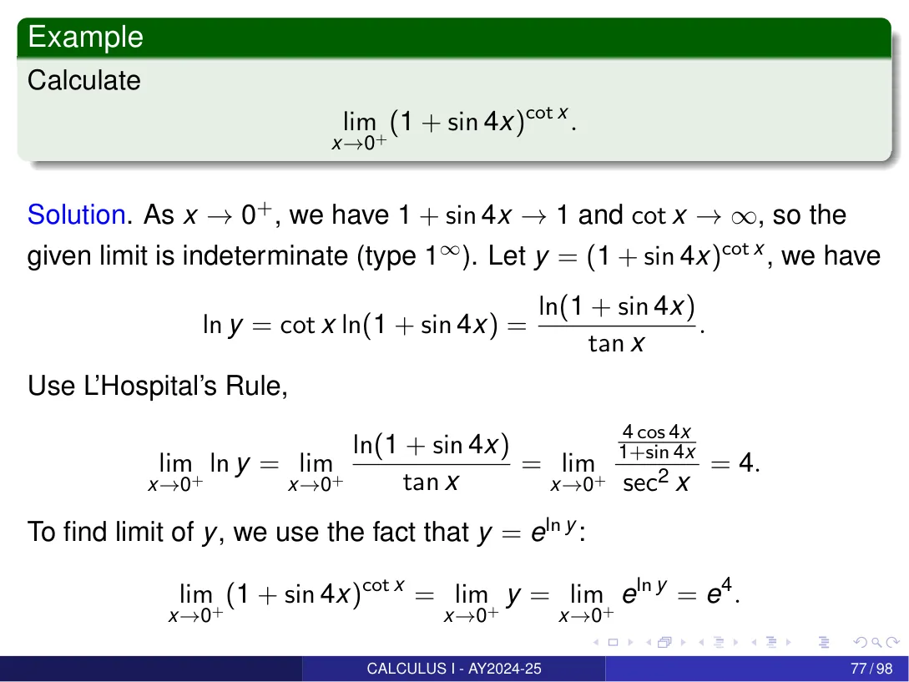
$1+\sin4x\to1$ and $\cot x\to\infty$: type $1^\infty$. Put $y=(1+\sin4x)^{\cot x}$: $\ln y=\frac{\ln(1+\sin4x)}{\tan x}$, type $\frac00$. L'Hôpital: $\frac{4\cos4x/(1+\sin4x)}{\sec^2x}\to4$. So $\lim\ln y=4$ and $\lim y=e^4$.
$1+\sin4x\to1$ và $\cot x\to\infty$: dạng $1^\infty$. Đặt $y=(1+\sin4x)^{\cot x}$: $\ln y=\frac{\ln(1+\sin4x)}{\tan x}$, dạng $\frac00$. L'Hôpital: $\frac{4\cos4x/(1+\sin4x)}{\sec^2x}\to4$. Vậy $\lim\ln y=4$ và $\lim y=e^4$.
Compute $\displaystyle\lim_{x\to0}(1+2x)^{1/x}$.
Tính $\displaystyle\lim_{x\to0}(1+2x)^{1/x}$.
Answer and solution · Đáp án và lời giải
Answer · Đáp án: $e^2$
Type $1^\infty$. $\ln y=\frac{\ln(1+2x)}{x}\to\frac{2/(1+2x)}1=2$, so $y\to e^2$.
Dạng $1^\infty$. $\ln y=\frac{\ln(1+2x)}{x}\to\frac{2/(1+2x)}1=2$ nên $y\to e^2$.
Roadmap: Newton's method · Lộ trình: phương pháp Newton
★ Context · Bổ trợWhy we need approximate roots · Vì sao cần nghiệm gần đúng
★★ Important · Quan trọng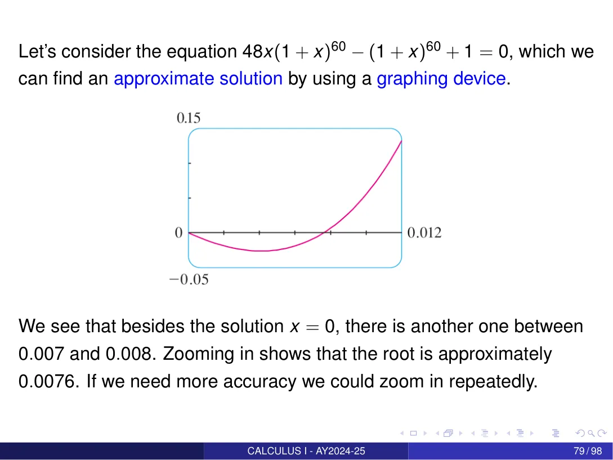
The equation $48x(1+x)^{60}-(1+x)^{60}+1=0$ has the root $x=0$ and another near $0.0076$ (seen by zooming on a graph). Most equations cannot be solved by formulas, and zooming repeatedly is slow. Is there a systematic way to get as many digits as we like?
Phương trình $48x(1+x)^{60}-(1+x)^{60}+1=0$ có nghiệm $x=0$ và một nghiệm khác gần $0.0076$ (thấy bằng cách phóng to đồ thị). Hầu hết phương trình không giải được bằng công thức, và phóng to nhiều lần thì chậm. Có cách có hệ thống để lấy bao nhiêu chữ số tùy ý không?
Locate numerically the positive root of $48x(1+x)^{60}-(1+x)^{60}+1=0$ starting at $x=0.0075$.
Tìm số học nghiệm dương của $48x(1+x)^{60}-(1+x)^{60}+1=0$ bắt đầu từ $x=0.0075$.
Answer and solution · Đáp án và lời giải
Answer · Đáp án: $x\approx0.0076$
A numerical solver started near $0.0075$ converges to about $0.00757$, in agreement with the graph (between $0.007$ and $0.008$).
Một bộ giải số bắt đầu gần $0.0075$ hội tụ về khoảng $0.00757$, khớp với đồ thị (giữa $0.007$ và $0.008$).
Newton's idea: replace the curve by its tangent · Ý tưởng Newton: thay đường cong bằng tiếp tuyến
★★★ Core · Cốt lõi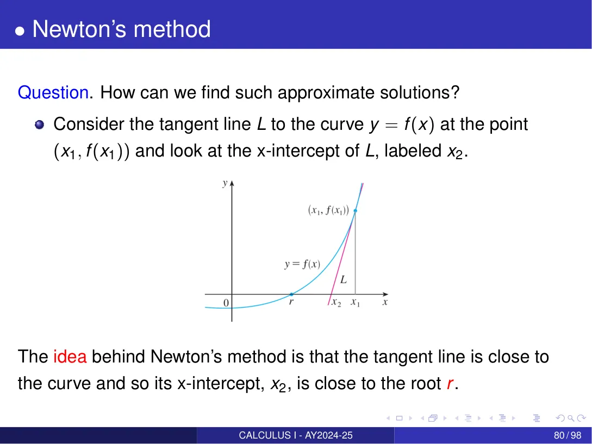
Take a first guess $x_1$. Draw the tangent to $y=f(x)$ at $(x_1,f(x_1))$ and let $x_2$ be its $x$-intercept. The tangent is close to the curve, so $x_2$ is close to the root $r$, usually closer than $x_1$.
Lấy một giá trị đoán đầu $x_1$. Vẽ tiếp tuyến của $y=f(x)$ tại $(x_1,f(x_1))$ và gọi $x_2$ là giao điểm của nó với trục hoành. Tiếp tuyến gần với đường cong nên $x_2$ gần nghiệm $r$, thường gần hơn $x_1$.
Newton's formula from the tangent line · Công thức Newton từ phương trình tiếp tuyến
★★★ Core · Cốt lõi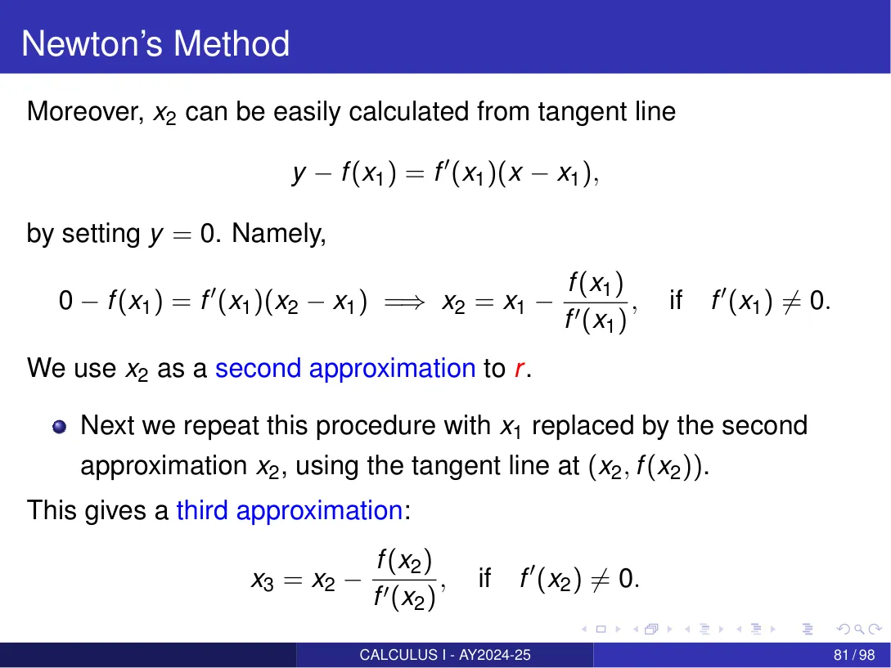
The tangent is $y-f(x_1)=f'(x_1)(x-x_1)$. Put $y=0$: $0-f(x_1)=f'(x_1)(x_2-x_1)$, so $x_2=x_1-\frac{f(x_1)}{f'(x_1)}$ (if $f'(x_1)\ne0$). Repeat from $x_2$ to get $x_3=x_2-\frac{f(x_2)}{f'(x_2)}$.
Tiếp tuyến là $y-f(x_1)=f'(x_1)(x-x_1)$. Cho $y=0$: $0-f(x_1)=f'(x_1)(x_2-x_1)$ nên $x_2=x_1-\frac{f(x_1)}{f'(x_1)}$ (nếu $f'(x_1)\ne0$). Lặp lại từ $x_2$ được $x_3=x_2-\frac{f(x_2)}{f'(x_2)}$.
The sequence of approximations · Dãy các xấp xỉ
★★ Important · Quan trọng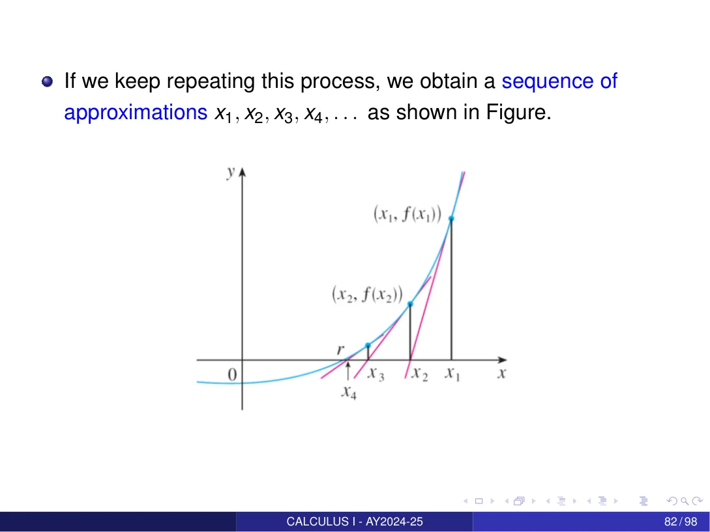
Repeating gives a sequence $x_1,x_2,x_3,\dots$ closing in on the root; the figure shows the zig-zag of tangents. Each step uses only $f$ and $f'$ at the current point.
Lặp lại cho một dãy $x_1,x_2,x_3,\dots$ tiến sát nghiệm; hình cho thấy đường zig-zag của các tiếp tuyến. Mỗi bước chỉ dùng $f$ và $f'$ tại điểm hiện tại.
The general step, convergence and when it fails · Bước tổng quát, sự hội tụ và khi nào thất bại
★★★ Core · Cốt lõi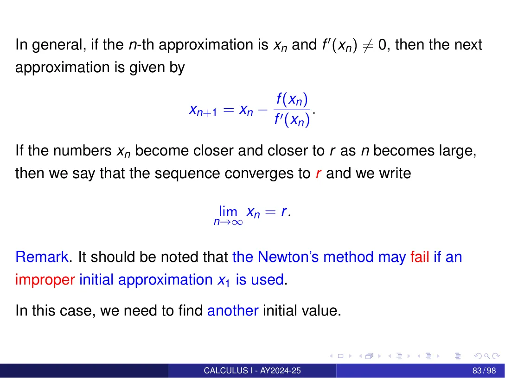
$x_{n+1}=x_n-\dfrac{f(x_n)}{f'(x_n)}$. If the $x_n$ approach $r$ we say the sequence converges to $r$ and write $\lim x_n=r$. Remark: the method may fail with a bad starting value (for instance where $f'(x_n)=0$ or the tangent sends us away), then choose another $x_1$.
$x_{n+1}=x_n-\dfrac{f(x_n)}{f'(x_n)}$. Nếu các $x_n$ tiến tới $r$ ta nói dãy hội tụ tới $r$ và viết $\lim x_n=r$. Lưu ý: phương pháp có thể thất bại nếu chọn giá trị đầu không tốt (chẳng hạn nơi $f'(x_n)=0$ hoặc tiếp tuyến đưa ta ra xa), khi đó chọn $x_1$ khác.
Newton's method is exactly how calculators and software find roots, and the iteration $x_{n+1}=g(x_n)$ is the first example of a sequence defined by recursion (Chapter 6).
Phương pháp Newton chính là cách máy tính và phần mềm tìm nghiệm, và phép lặp $x_{n+1}=g(x_n)$ là ví dụ đầu tiên về dãy xác định bằng truy hồi (Chương 6).
Apply Newton's method to $f(x)=x^2-2$ with $x_1=1$: compute $x_2,x_3,x_4$ exactly.
Áp dụng phương pháp Newton cho $f(x)=x^2-2$ với $x_1=1$: tính chính xác $x_2,x_3,x_4$.
Answer and solution · Đáp án và lời giải
Answer · Đáp án: $x_2=\frac32$, $x_3=\frac{17}{12}$, $x_4=\frac{577}{408}$ (towards $\sqrt2=1.41421\ldots$)
$x_{n+1}=x_n-\frac{x_n^2-2}{2x_n}=\frac12\left(x_n+\frac2{x_n}\right)$. So $x_2=\frac12(1+2)=\frac32$, $x_3=\frac12\left(\frac32+\frac43\right)=\frac{17}{12}$, $x_4=\frac12\left(\frac{17}{12}+\frac{24}{17}\right)=\frac{577}{408}\approx1.414216$.
$x_{n+1}=x_n-\frac{x_n^2-2}{2x_n}=\frac12\left(x_n+\frac2{x_n}\right)$. Vậy $x_2=\frac12(1+2)=\frac32$, $x_3=\frac12\left(\frac32+\frac43\right)=\frac{17}{12}$, $x_4=\frac12\left(\frac{17}{12}+\frac{24}{17}\right)=\frac{577}{408}\approx1.414216$.
Example: the root of $\cos x=x$, the formula · Ví dụ: nghiệm của $\cos x=x$, công thức
★★★ Core · Cốt lõi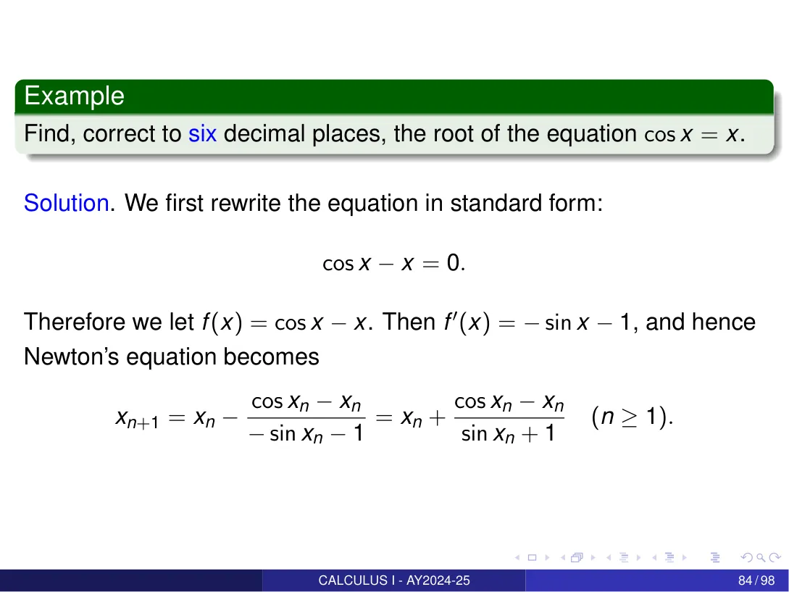
Write it in standard form $f(x)=\cos x-x=0$. Then $f'(x)=-\sin x-1$ and Newton's step becomes $x_{n+1}=x_n-\frac{\cos x_n-x_n}{-\sin x_n-1}=x_n+\frac{\cos x_n-x_n}{\sin x_n+1}$. Be careful with the minus signs.
Viết dưới dạng chuẩn $f(x)=\cos x-x=0$. Khi đó $f'(x)=-\sin x-1$ và bước Newton trở thành $x_{n+1}=x_n-\frac{\cos x_n-x_n}{-\sin x_n-1}=x_n+\frac{\cos x_n-x_n}{\sin x_n+1}$. Cẩn thận với các dấu trừ.
Choosing the starting value from a sketch · Chọn giá trị đầu từ hình vẽ
★★ Important · Quan trọng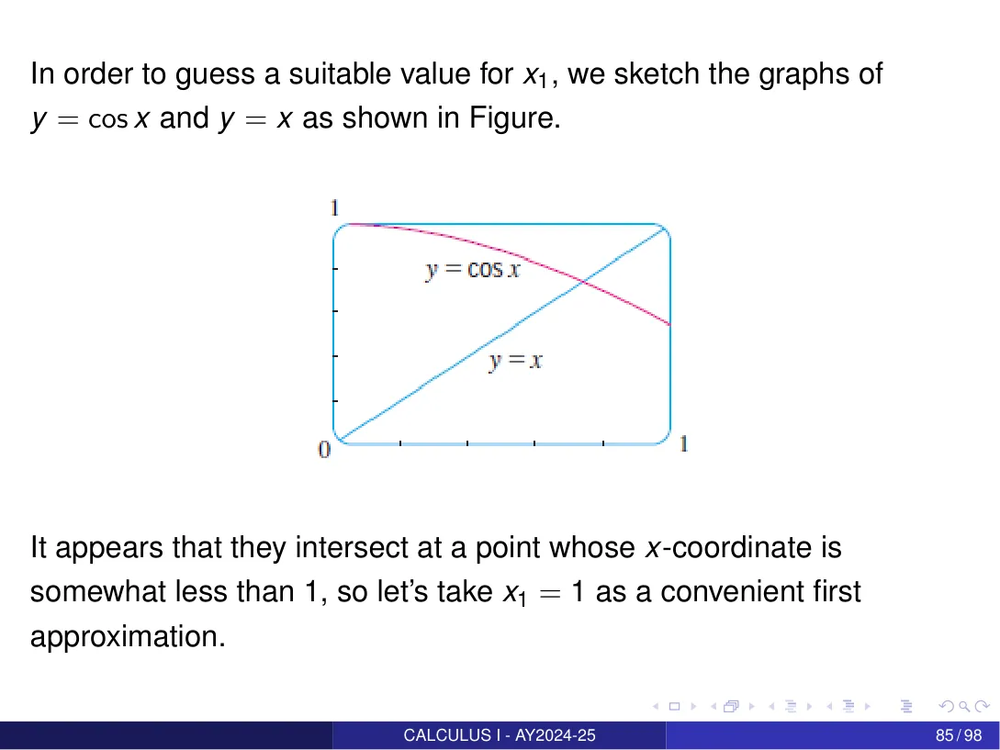
To choose $x_1$ sketch $y=\cos x$ and $y=x$: they meet at an $x$ somewhat less than $1$, so take $x_1=1$. A rough graph is enough to start Newton's method.
Để chọn $x_1$ hãy vẽ $y=\cos x$ và $y=x$: chúng cắt nhau tại $x$ hơi nhỏ hơn $1$, nên lấy $x_1=1$. Một đồ thị phác là đủ để khởi động phương pháp Newton.
The iterations and the six-decimal answer · Các bước lặp và đáp số sáu chữ số thập phân
★★★ Core · Cốt lõi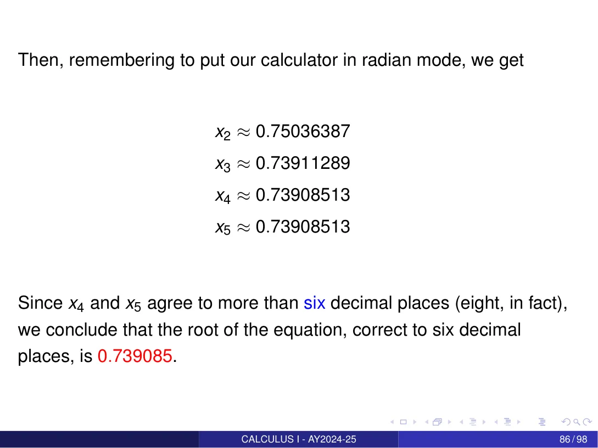
With the calculator in radian mode: $x_2\approx0.75036387$, $x_3\approx0.73911289$, $x_4\approx0.73908513$, $x_5\approx0.73908513$. Since $x_4$ and $x_5$ agree to eight places, the root is $0.739085$ to six decimals. The number of correct digits roughly doubles at each step.
Với máy tính ở chế độ radian: $x_2\approx0.75036387$, $x_3\approx0.73911289$, $x_4\approx0.73908513$, $x_5\approx0.73908513$. Vì $x_4$ và $x_5$ trùng nhau đến tám chữ số nên nghiệm là $0.739085$ với sáu chữ số thập phân. Số chữ số đúng xấp xỉ gấp đôi sau mỗi bước.
Reproduce the slide: iterate $x_{n+1}=x_n+\frac{\cos x_n-x_n}{\sin x_n+1}$ from $x_1=1$ and check $x_2$ and $x_4$.
Tái hiện slide: lặp $x_{n+1}=x_n+\frac{\cos x_n-x_n}{\sin x_n+1}$ từ $x_1=1$ và kiểm tra $x_2$ và $x_4$.
Answer and solution · Đáp án và lời giải
Answer · Đáp án: $x_2\approx0.75036387$, $x_4\approx0.73908513$
$x_2=1+\frac{\cos1-1}{\sin1+1}=1+\frac{-0.4597}{1.8415}=0.75036\ldots$ and the next two steps give $0.739113$ and $0.739085$.
$x_2=1+\frac{\cos1-1}{\sin1+1}=1+\frac{-0.4597}{1.8415}=0.75036\ldots$ và hai bước tiếp theo cho $0.739113$ và $0.739085$.
A better starting value saves a step · Giá trị đầu tốt hơn tiết kiệm một bước
★★ Important · Quan trọng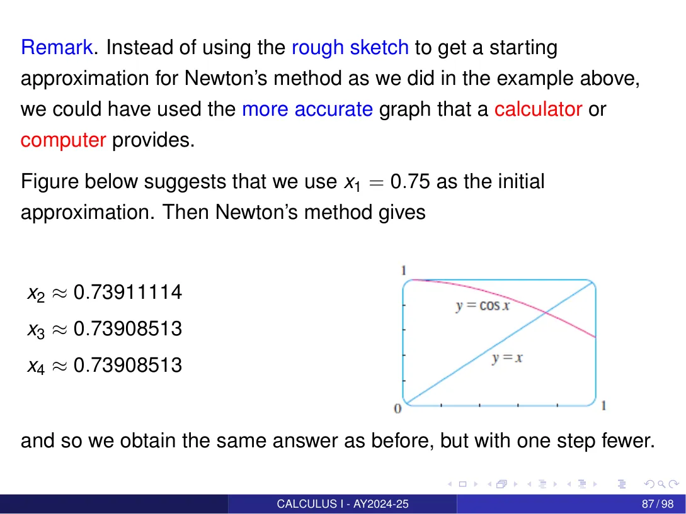
A graph from a calculator suggests $x_1=0.75$: then $x_2\approx0.73911114$, $x_3\approx0.73908513$, $x_4\approx0.73908513$: the same answer one step sooner. Moral: the closer the start, the faster the convergence.
Đồ thị từ máy tính gợi ý $x_1=0.75$: khi đó $x_2\approx0.73911114$, $x_3\approx0.73908513$, $x_4\approx0.73908513$: cùng đáp số nhưng nhanh hơn một bước. Bài học: giá trị đầu càng gần thì hội tụ càng nhanh.
Roadmap: antiderivatives · Lộ trình: nguyên hàm
★ Context · Bổ trợ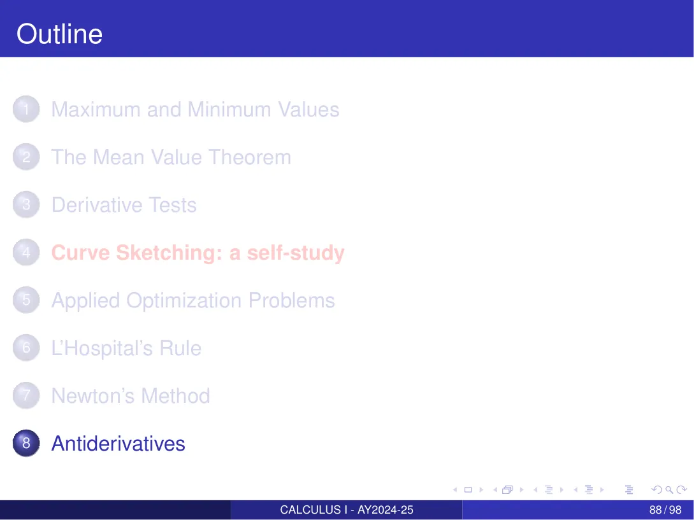
Outline, part 8, the last part of Chapter 3: antiderivatives.
Lộ trình, phần 8, phần cuối của Chương 3: nguyên hàm.
Definition of an antiderivative · Định nghĩa nguyên hàm
★★★ Core · Cốt lõi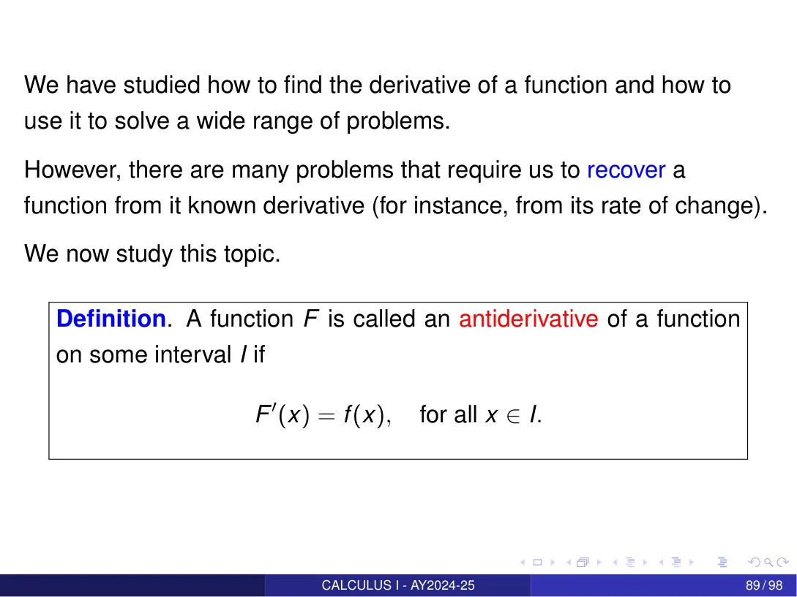
So far we found a derivative from a function; many problems go the other way: recover a function from its derivative (its rate of change). $F$ is an antiderivative of $f$ on $I$ if $F'(x)=f(x)$ for all $x\in I$.
Đến giờ ta tìm đạo hàm từ hàm số; nhiều bài toán đi chiều ngược lại: khôi phục hàm từ đạo hàm của nó (tốc độ thay đổi). $F$ là một nguyên hàm của $f$ trên $I$ nếu $F'(x)=f(x)$ với mọi $x\in I$.
Antiderivatives differ by a constant · Các nguyên hàm khác nhau một hằng số
★★★ Core · Cốt lõi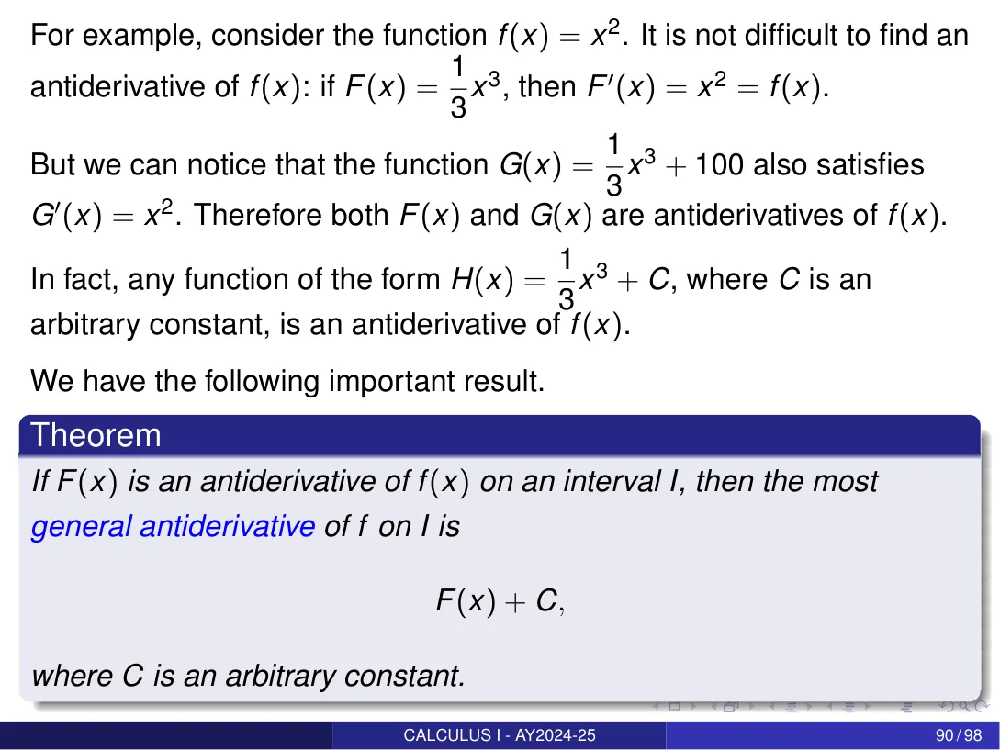
For $f(x)=x^2$, $F(x)=\frac13x^3$ works, but so does $G(x)=\frac13x^3+100$. In fact $\frac13x^3+C$ is an antiderivative for every constant $C$. Theorem: if $F$ is one antiderivative on an interval, the most general one is $F(x)+C$ (this comes from the MVT consequence in Lecture 5).
Với $f(x)=x^2$, $F(x)=\frac13x^3$ dùng được, nhưng $G(x)=\frac13x^3+100$ cũng vậy. Thực ra $\frac13x^3+C$ là nguyên hàm với mọi hằng số $C$. Định lý: nếu $F$ là một nguyên hàm trên một khoảng thì nguyên hàm tổng quát nhất là $F(x)+C$ (suy ra từ hệ quả của MVT ở Bài 5).
Show that $\frac13x^3+100$ is also an antiderivative of $x^2$.
Chứng tỏ $\frac13x^3+100$ cũng là một nguyên hàm của $x^2$.
Answer and solution · Đáp án và lời giải
Answer · Đáp án: $\left(\frac13x^3+100\right)'=x^2$
The derivative of a constant is $0$, so adding $100$ does not change the derivative.
Đạo hàm của hằng số bằng $0$ nên cộng thêm $100$ không đổi đạo hàm.
The table of antiderivative formulas · Bảng công thức nguyên hàm
★★★ Core · Cốt lõi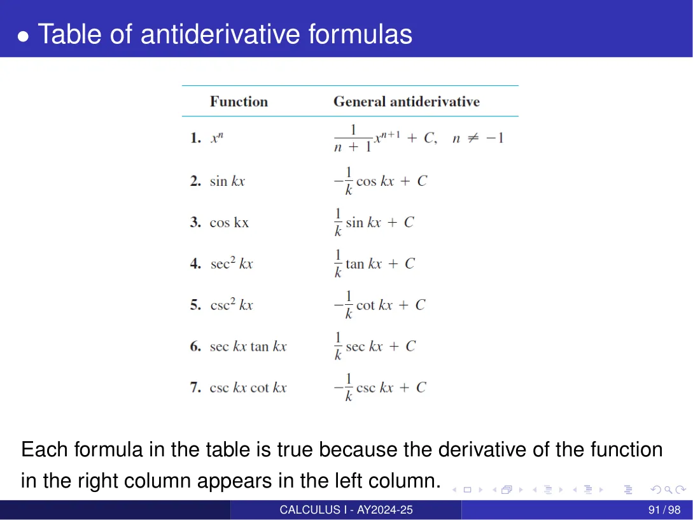
Each formula is read from a derivative formula backwards: e.g. $\int x^n\,dx=\frac{x^{n+1}}{n+1}+C$ ($n\ne-1$), $\int\frac1x\,dx=\ln|x|+C$, $\int e^x\,dx=e^x+C$, $\int\cos x\,dx=\sin x+C$, $\int\sec^2x\,dx=\tan x+C$, $\int\frac{dx}{1+x^2}=\arctan x+C$. The student should know the table by heart.
Mỗi công thức được đọc ngược từ một công thức đạo hàm: ví dụ $\int x^n\,dx=\frac{x^{n+1}}{n+1}+C$ ($n\ne-1$), $\int\frac1x\,dx=\ln|x|+C$, $\int e^x\,dx=e^x+C$, $\int\cos x\,dx=\sin x+C$, $\int\sec^2x\,dx=\tan x+C$, $\int\frac{dx}{1+x^2}=\arctan x+C$. Bạn cần thuộc lòng bảng này.
Find an antiderivative of $x^3+\dfrac1x+e^x$ ($x>0$).
Tìm một nguyên hàm của $x^3+\dfrac1x+e^x$ ($x>0$).
Answer and solution · Đáp án và lời giải
Answer · Đáp án: $\dfrac{x^4}4+\ln x+e^x+C$
Term by term: $\frac{x^4}4$, $\ln x$ (for $x>0$) and $e^x$. Check by differentiating.
Từng số hạng: $\frac{x^4}4$, $\ln x$ (với $x>0$) và $e^x$. Kiểm tra bằng cách lấy đạo hàm.
Linearity rules for antiderivatives · Quy tắc tuyến tính của nguyên hàm
★★★ Core · Cốt lõi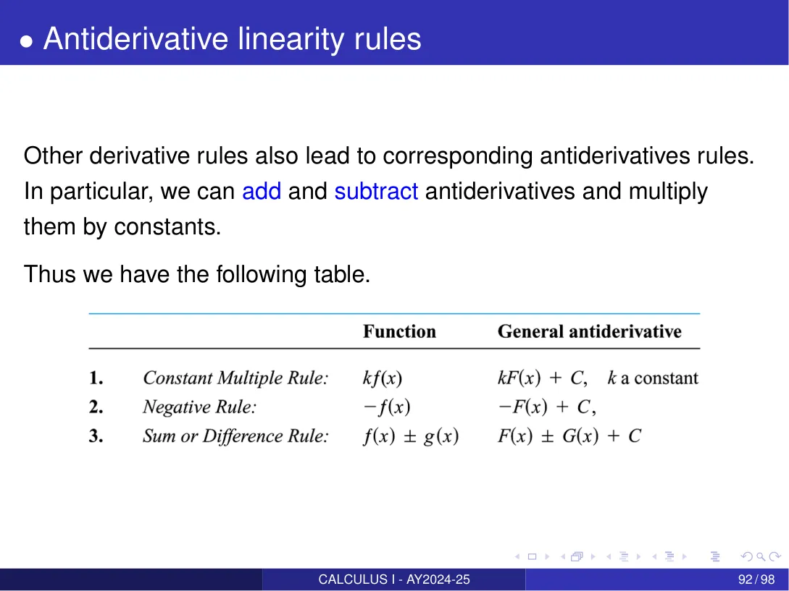
Antiderivatives can be added, subtracted and multiplied by constants: $\int(af+bg)=a\int f+b\int g$. A constant factor comes out of the integral; a product or a quotient of functions does not split.
Nguyên hàm có thể cộng, trừ và nhân với hằng số: $\int(af+bg)=a\int f+b\int g$. Hằng số được đưa ra ngoài dấu tích phân; tích hay thương của các hàm thì không tách được.
Find $\displaystyle\int\left(5\cos x-3\sin x+\frac2{\sqrt x}\right)dx$.
Tìm $\displaystyle\int\left(5\cos x-3\sin x+\frac2{\sqrt x}\right)dx$.
Answer and solution · Đáp án và lời giải
Answer · Đáp án: $5\sin x+3\cos x+4\sqrt x+C$
$\int\cos x=\sin x$; $\int\sin x=-\cos x$, so $-3\sin x\to+3\cos x$; $\int2x^{-1/2}dx=2\cdot2x^{1/2}=4\sqrt x$.
$\int\cos x=\sin x$; $\int\sin x=-\cos x$ nên $-3\sin x\to+3\cos x$; $\int2x^{-1/2}dx=2\cdot2x^{1/2}=4\sqrt x$.
Antiderivatives and motion in a straight line · Nguyên hàm và chuyển động thẳng
★★★ Core · Cốt lõi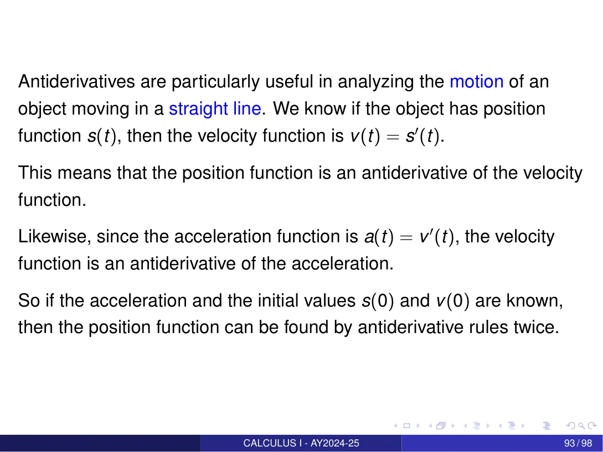
Position $s(t)$, velocity $v=s'$, acceleration $a=v'$. So velocity is an antiderivative of acceleration and position an antiderivative of velocity. With the acceleration and the initial values $s(0)$, $v(0)$ known, antidifferentiate twice to get $s(t)$; each integration brings one constant, fixed by an initial condition.
Vị trí $s(t)$, vận tốc $v=s'$, gia tốc $a=v'$. Vậy vận tốc là một nguyên hàm của gia tốc và vị trí là một nguyên hàm của vận tốc. Biết gia tốc và các giá trị đầu $s(0)$, $v(0)$, lấy nguyên hàm hai lần được $s(t)$; mỗi lần cho một hằng số, xác định bởi một điều kiện đầu.
Example: the ball thrown from a cliff, the velocity · Ví dụ: quả bóng ném từ vách đá, vận tốc
★★★ Core · Cốt lõi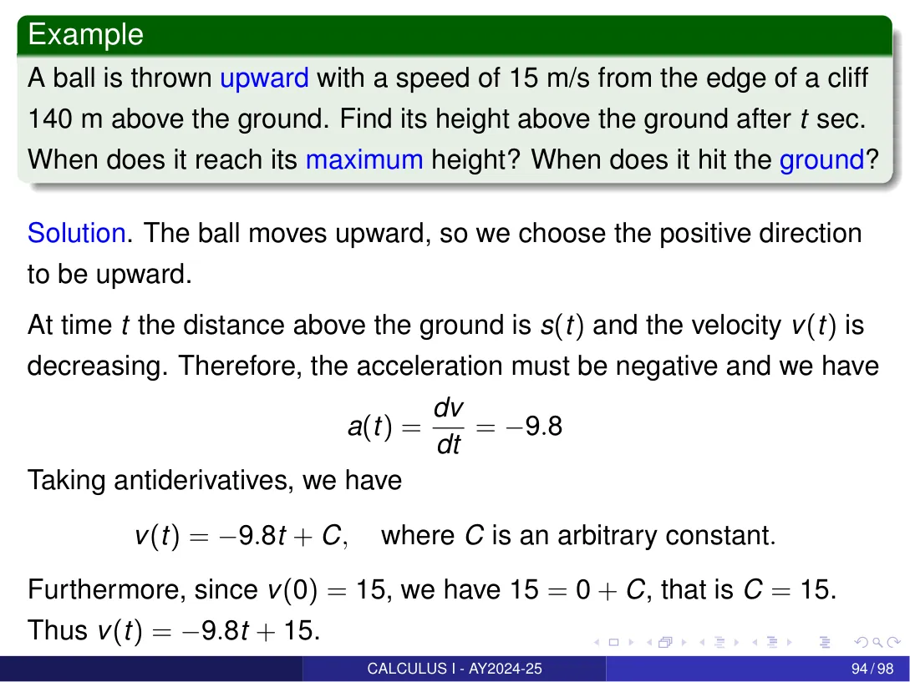
A ball is thrown up at $15$ m/s from a cliff $140$ m high. Take upward as positive: $a(t)=-9.8$. Antiderivative: $v(t)=-9.8t+C$; $v(0)=15$ gives $C=15$, so $v(t)=-9.8t+15$.
Một quả bóng được ném lên với vận tốc $15$ m/s từ vách đá cao $140$ m. Chọn chiều lên làm dương: $a(t)=-9.8$. Nguyên hàm: $v(t)=-9.8t+C$; $v(0)=15$ cho $C=15$, nên $v(t)=-9.8t+15$.
The ball: height, maximum height and landing time · Quả bóng: độ cao, độ cao cực đại và thời điểm chạm đất
★★★ Core · Cốt lõi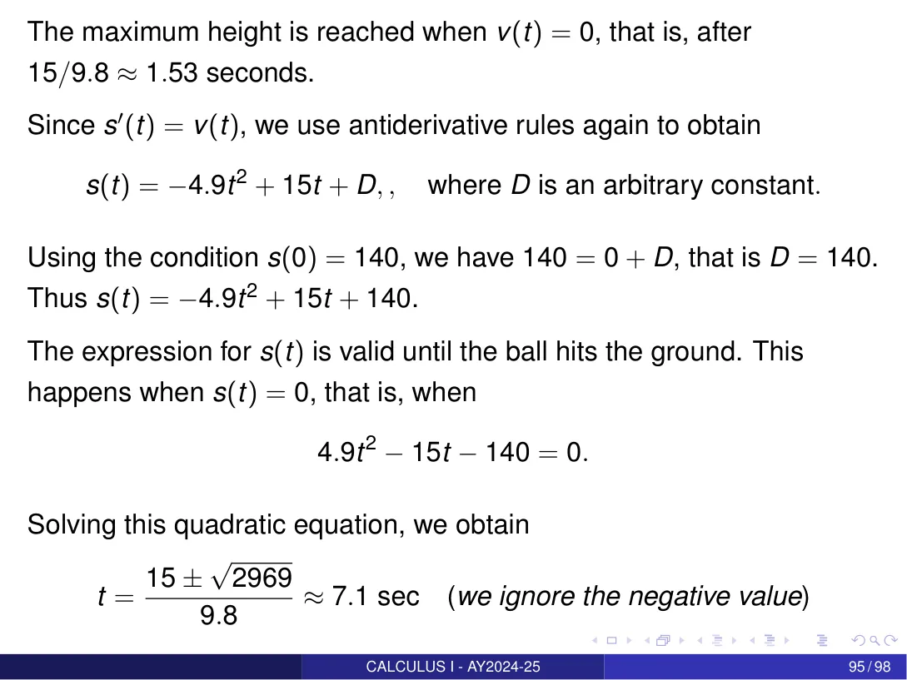
Maximum height when $v=0$: $t=\frac{15}{9.8}\approx1.53$ s. Position: $s(t)=-4.9t^2+15t+D$ and $s(0)=140$ give $s(t)=-4.9t^2+15t+140$. It hits the ground when $s=0$: $4.9t^2-15t-140=0$, $t=\frac{15\pm\sqrt{2969}}{9.8}$; the positive root is $t\approx7.1$ s.
Độ cao cực đại khi $v=0$: $t=\frac{15}{9.8}\approx1.53$ s. Vị trí: $s(t)=-4.9t^2+15t+D$ và $s(0)=140$ cho $s(t)=-4.9t^2+15t+140$. Chạm đất khi $s=0$: $4.9t^2-15t-140=0$, $t=\frac{15\pm\sqrt{2969}}{9.8}$; nghiệm dương là $t\approx7.1$ s.
Check the slide: antidifferentiate $a=-9.8$ twice with $v(0)=15$, $s(0)=140$, and verify the landing time.
Kiểm tra slide: lấy nguyên hàm $a=-9.8$ hai lần với $v(0)=15$, $s(0)=140$, và xác minh thời điểm chạm đất.
Answer and solution · Đáp án và lời giải
Answer · Đáp án: $s(t)=-4.9t^2+15t+140$; lands at $t\approx7.09$ s
Discriminant $15^2+4(4.9)(140)=225+2744=2969$, so $t=\frac{15+\sqrt{2969}}{9.8}\approx7.09$.
Biệt thức $15^2+4(4.9)(140)=225+2744=2969$ nên $t=\frac{15+\sqrt{2969}}{9.8}\approx7.09$.
A stone is dropped from a height of $80$ m. When does it hit the ground?
Một hòn đá được thả từ độ cao $80$ m. Khi nào nó chạm đất?
Answer and solution · Đáp án và lời giải
Answer · Đáp án: $t=\sqrt{80/4.9}\approx4.04$ s
$a=-9.8$, $v(0)=0$: $v=-9.8t$; $s(0)=80$: $s=80-4.9t^2=0$ at $t=\sqrt{80/4.9}$.
$a=-9.8$, $v(0)=0$: $v=-9.8t$; $s(0)=80$: $s=80-4.9t^2=0$ tại $t=\sqrt{80/4.9}$.
The indefinite integral · Tích phân bất định
★★★ Core · Cốt lõi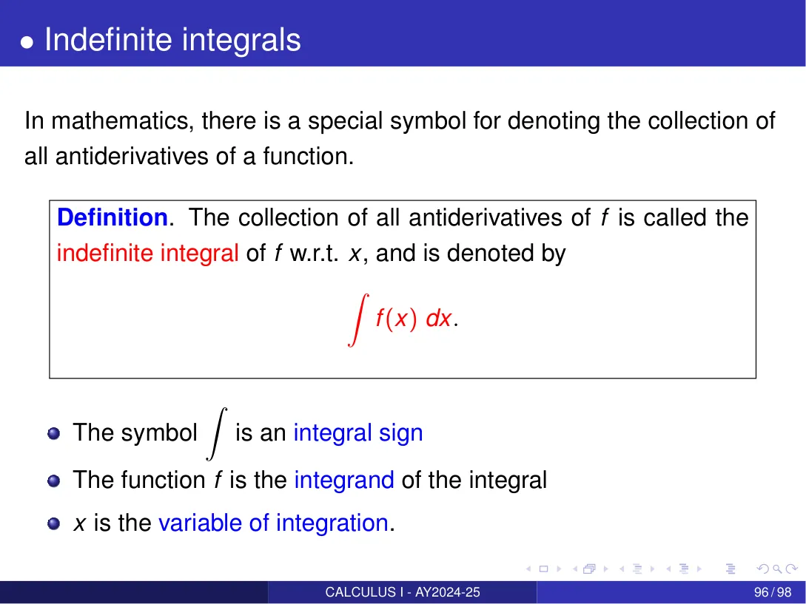
The collection of all antiderivatives of $f$ is the indefinite integral $\int f(x)\,dx$. The symbol $\int$ is the integral sign, $f$ the integrand, $x$ the variable of integration. The answer is a family of functions, so it always carries a $+C$.
Tập hợp tất cả nguyên hàm của $f$ là tích phân bất định $\int f(x)\,dx$. Ký hiệu $\int$ là dấu tích phân, $f$ là hàm dưới dấu tích phân, $x$ là biến lấy tích phân. Kết quả là một họ hàm số nên luôn kèm $+C$.
The differential $dx$ always follows the integrand · Vi phân $dx$ luôn đứng sau hàm dưới dấu tích phân
★★ Important · Quan trọng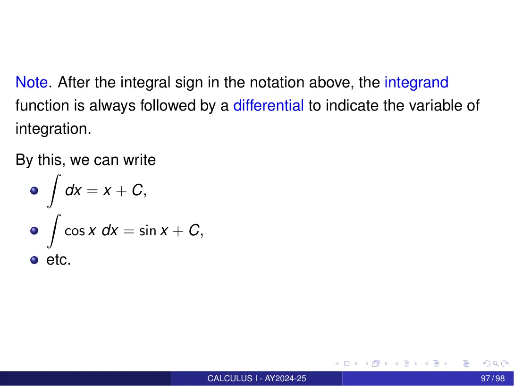
After the integral sign the integrand is always followed by a differential showing the variable: $\int dx=x+C$, $\int\cos x\,dx=\sin x+C$. Never forget the $dx$ and never forget $+C$ (both are marked in tests).
Sau dấu tích phân, hàm dưới dấu tích phân luôn đi kèm một vi phân chỉ biến: $\int dx=x+C$, $\int\cos x\,dx=\sin x+C$. Đừng bao giờ quên $dx$ và $+C$ (cả hai đều bị trừ điểm trong đề).
Find $\displaystyle\int(3x^2-4x+1)\,dx$ and check it by differentiating.
Tìm $\displaystyle\int(3x^2-4x+1)\,dx$ và kiểm tra bằng cách đạo hàm.
Answer and solution · Đáp án và lời giải
Answer · Đáp án: $x^3-2x^2+x+C$
Term by term: $3\cdot\frac{x^3}3=x^3$, $-4\cdot\frac{x^2}2=-2x^2$, $\int1\,dx=x$. Derivative of the result: $3x^2-4x+1$.
Từng số hạng: $3\cdot\frac{x^3}3=x^3$, $-4\cdot\frac{x^2}2=-2x^2$, $\int1\,dx=x$. Đạo hàm của kết quả: $3x^2-4x+1$.
End of Chapter 3 · Kết thúc Chương 3
★ Context · Bổ trợ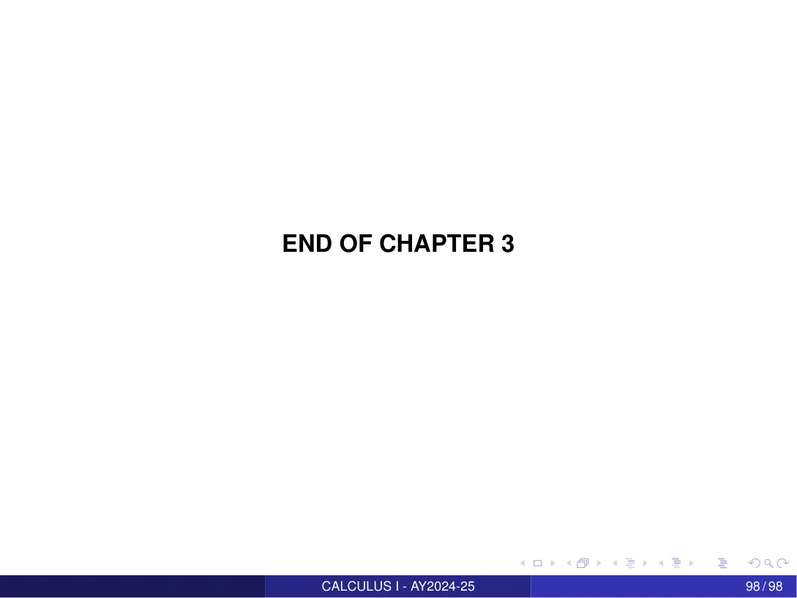
End of Chapter 3. Recap: extreme values and tests (Lecture 5), optimisation, L'Hôpital, Newton, antiderivatives (today). Next: the definite integral, where antiderivatives become the key tool.
Kết thúc Chương 3. Tóm tắt: giá trị cực trị và các phép thử (Bài 5), tối ưu hóa, L'Hôpital, Newton, nguyên hàm (hôm nay). Tiếp theo: tích phân xác định, nơi nguyên hàm trở thành công cụ chủ chốt.